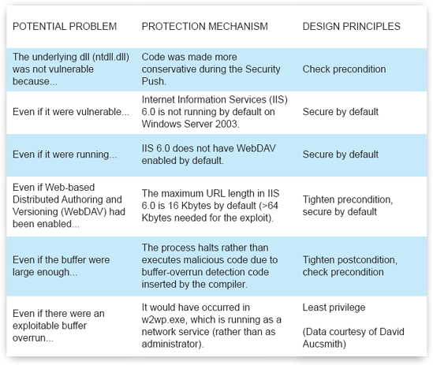
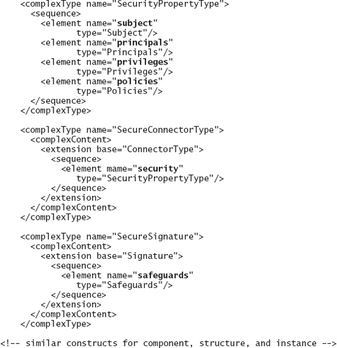
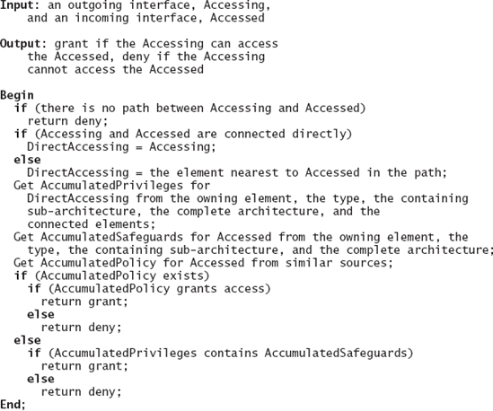
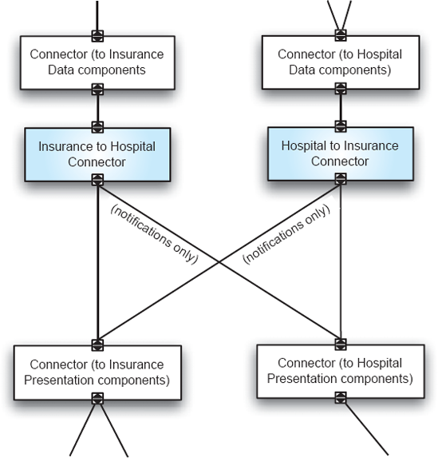
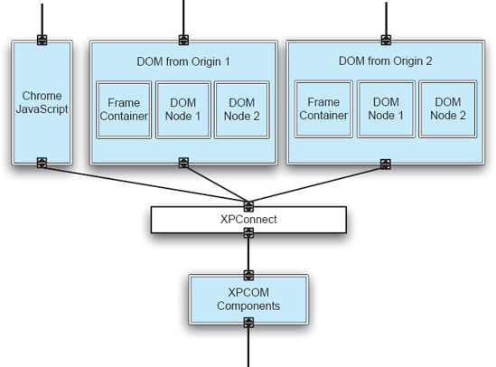
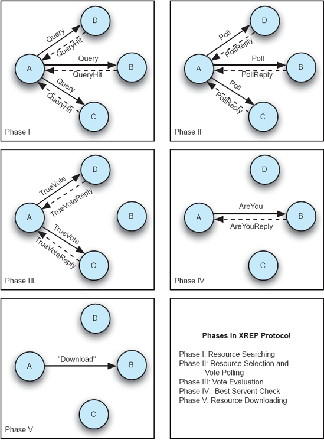
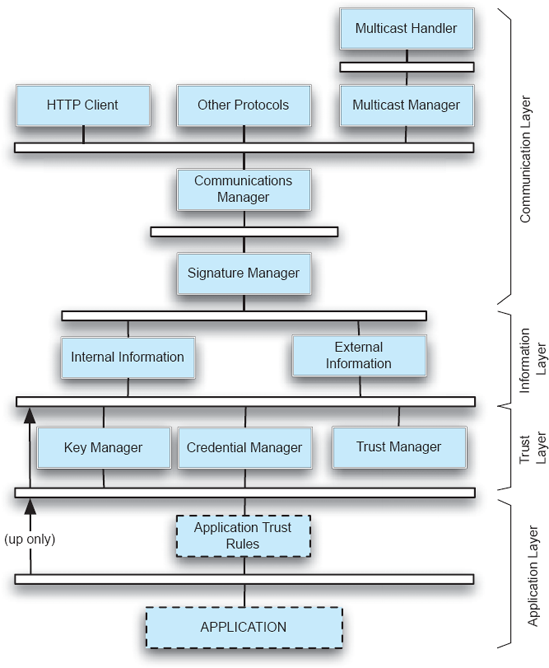
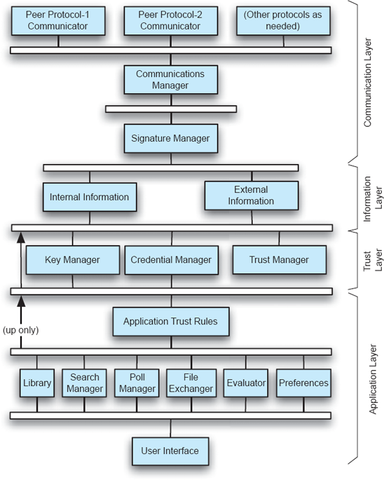

Capítulo 13. Segurança e Confiança
O capítulo anterior introduziu várias propriedades não funcionais, como eficiência, escalabilidade e confiabilidade, e descreveu estratégias de design arquitetônico para ajudar a alcançar essas propriedades. A segurança é outra propriedade não funcional; Sua importância crescente e crítica justifica a análise separada e aprofundada apresentada neste capítulo. Como acontece com muitas outras propriedades não funcionais, ela é mais eficazmente abordada ao projetar a arquitetura de um sistema.
Considere o exemplo das arquiteturas de edifícios introduzidas emCapítulo 1. Um edifício é projetado levando em conta várias propriedades estruturais e os requisitos do proprietário. Se tais requisitos e projetos não abrangem necessidades de segurança, podem surgir problemas. Por exemplo, se um edifício possui janelas ou portas de fácil acesso externo, ou sua estrutura impede a instalação de alarmes de segurança, o edifício pode ficar vulnerável a visitantes indesejados. Se essas considerações forem consideradas durante o projeto do edifício, porém, uma estrutura segura a um preço razoável é possível.
Se o edifício não for projetado desde o início com a segurança em mente, ainda pode ser possível adicionar reforços externos para melhorar a segurança quando tais demandas ocorrerem posteriormente. Por exemplo, paredes finas podem ser reforçadas adicionando camadas extras; Portas e janelas que representam possíveis pontos de entrada podem ser protegidas usando mecanismos adequados de fechadura. Em alguns casos, um edifício pode não ser seguro sozinho, mas pode estar dentro de um recinto fechado que pode proteger toda a comunidade contra intrusos externos.
A ressalva de adicionar segurança depois é que geralmente é mais caro do que tomar as medidas adequadas desde o início. Imagine abrir as paredes, instalar fios e câmeras extras, e depois fechar as paredes. Isso é mais caro do que imaginar os requisitos desde o início e projetar o edifício com base nesses requisitos. O mesmo vale para software. Portanto, é fundamental que a segurança seja considerada e tratada ao desenvolver a arquitetura de um sistema. Utilizar uma abordagem baseada em arquitetura de software para segurança permite que os desenvolvedores aproveitem a experiência e alcancem as propriedades de segurança desejadas. A arquitetura de software também fornece uma base sólida para raciocinar sobre propriedades de segurança.
Note que, embora reforços externos possam ser usados para fornecer certo grau de segurança após o desenvolvimento, isso ainda implica que o software seja projetado para permitir a adição desses reforços sem comprometer as funcionalidades necessárias. Isso torna o raciocínio sobre segurança no nível arquitetônico ainda mais importante. Além disso, como os sistemas de software frequentemente passam por uma rodada prolongada de lançamentos à medida que novas funcionalidades são adicionadas, uma abordagem arquitetônica baseada em segurança pode fornecer orientação durante os diversos ciclos de evolução do software e ajudar a garantir que propriedades essenciais de segurança continuem sendo alcançadas em cada lançamento.
A segurança, por mais importante que seja, é apenas uma parte do sistema como um todo. Ele precisa ser equilibrado com outras propriedades não funcionais. Por exemplo, a criptografia é geralmente usada em sistemas de software para manter os dados em segredo, mas o uso da criptografia pode ser computacionalmente caro, e o desempenho do sistema pode ser prejudicado por tais operações. Ainda mais importante, a segurança, juntamente com outras propriedades não funcionais, deve ser equilibrada com os requisitos funcionais gerais do sistema. Por exemplo, um navegador que exibe e executa todos os tipos de conteúdo proporcionaria a experiência mais rica para os usuários, mas essa execução indiscreta está quase fadada a trazer software malicioso para o computador do usuário. Ao enfrentar tais escolhas, partes interessadas desinformadas, como usuários finais e equipes de planejamento de produto, podem optar pela funcionalidade em detrimento de outras propriedades críticas. Uma abordagem de arquitetura de software pode melhorar essa condição ao fornecer a abstração e as ferramentas necessárias que ajudarão as partes interessadas a tomar decisões acertadas.
O capítulo começa com a introdução dos diferentes aspectos da segurança, incluindo confidencialidade, integridade e disponibilidade.Seção 13.2Discute vários princípios gerais de design para segurança. Esses princípios foram desenvolvidos por teóricos e praticantes ao longo dos anos e aplicados em muitos sistemas. Ilustramos como esses princípios podem ser aplicados a arquiteturas de software. Em certa diferença com o capítulo anterior, porém, as orientações de design fornecidas não são tão diretas. Propriedades como eficiência e confiabilidade têm sido importantes para os designers de software desde o início da engenharia de software, portanto não é surpreendente que o capítulo anterior tenha sido repleto de técnicas precisas para alcançá-las. A segurança tem uma importância mais recente e, provavelmente, é mais sutil, então é necessária uma compreensão ampla e aplicação dos princípios gerais de projeto. EmSeção 13.3, uma técnica para controle de acesso arquitetônico é apresentada que complementa outras técnicas de projeto com capacidades para especificar e regular a comunicação entre componentes. O capítulo conclui com uma apresentação emSeção 13.4de uma abordagem arquitetônica para construir aplicações descentralizadas habilitadas por confiança. Esse tipo de aplicativo desempenha um papel importante no mundo emergente da Web colaborativa, onde usuários autônomos se comunicam e colaboram em um ambiente comunitário e exigem gerenciamento de confiança para se protegerem de usuários maliciosos.
Resumo deCapítulo 13
SEGURANÇA
O Instituto Nacional de Padrões e Tecnologia define segurança informática como: "A proteção concedida a um sistema automatizado de informação para alcançar os objetivos aplicáveis de preservar a integridade, disponibilidade e confidencialidade dos recursos do sistema de informação (incluindo hardware, software, firmware, informação/dados e telecomunicações)" (Guttman e Roback 1995). De acordo com essa definição, existem três aspectos principais da segurança: confidencialidade, integridade e disponibilidade. Aqui os apresentamos brevemente; Para um tratamento abrangente, veja as referências no "Leitura adicional" no final do capítulo.
Confidencialidade
Preservar a confidencialidade das informações significa impedir que partes não autorizadas acessem as informações ou até mesmo que estejam cientes da existência delas. Confidencialidade também é chamada de sigilo.
Esse conceito é tão aplicável no domínio das arquiteturas de edifícios quanto aos sistemas computacionais. Por exemplo, em um grande complexo de escritórios com dois prédios, se a administração do escritório não quiser que outros saibam quando certos itens são movidos entre os dois prédios, a administração poderia construir uma passagem coberta entre eles para que outras pessoas fora do prédio não possam ver o que foi movido dentro da passagem. Ainda melhor, a passagem poderia ser construída no subsolo, então as pessoas nem sequer saberiam da existência da passagem.
Aplicando esse conceito a arquiteturas de software, os sistemas de software devem tomar as medidas adequadas ao trocar informações para proteger informações confidenciais de serem interceptadas por partes maliciosas. Da mesma forma, os sistemas devem armazenar dados sensíveis de forma segura para que usuários não autorizados não possam descobrir o conteúdo ou mesmo a existência desses dados.
Criptografia
Uma medida bem conhecida para apoiar o sigilo em sistemas de software é o uso de técnicas de criptografia. A própria criptografia tem sido usada desde o início da civilização, e o amplo uso de sistemas computacionais facilita a ampla adoção da criptografia computacional. Um mecanismo básico de criptografia pode ser descrito com as seguintes equações:
|
Cifra = Função de Criptografia(Encryption_Key, Texto Claro) |
|
Texto Claro = FunçãoDecifração(ChaveDe Criptografia, Cifra) |
Quando a informação precisa ser criptografada para preservar a confidencialidade durante a comunicação ou armazenamento, a informação, chamada texto claro, é inserida em um algoritmo de criptografia, junto com uma chave de criptografia, para produzir uma cifra. Para recuperar as informações originais armazenadas na cifra, a cifra pode ser inserida em um algoritmo de descriptografia, junto com a chave de descriptografia, para produzir o texto original em claro.
Uma função de criptografia possui uma função de descriptografia correspondente. Após usar uma função de criptografia específica, apenas a função correspondente de descriptografia pode ser usada para descriptografar a cifra.
Existem duas formas de funções de criptografia. Na criptografia de chave compartilhada, a mesma chave é usada tanto pelas funções de criptografia quanto de descriptografia. Esse tipo de esquema tem sido usado desde os primórdios da criptografia. A gestão da chave compartilhada, no entanto, apresenta problemas. Como a chave é compartilhada entre o emissor e o receptor, a chave deve ser entregue tanto ao emissor quanto ao receptor, o que pode ser desconfortável se o remetente quiser se comunicar com vários receptores. Além disso, como as melhores práticas de segurança exigem que as chaves não sejam reutilizadas (para frustrar os esforços de criptografia dos opositores), essas entregas de chaves devem ser realizadas toda vez que uma chave é alterada.
Para resolver o problema de gerenciamento de chaves com o esquema de chave compartilhada, a criptografia de chave pública foi inventada na década de 1970. Esses sistemas usam um par de chaves, que consiste em duas chaves relacionadas geradas ao mesmo tempo. Uma chave, a chave privada, é mantida e mantida em segredo por uma parte individual. A chave correspondente, a chave pública, é publicada pelo indivíduo e compartilhada com todos. Para enviar informações secretamente, o iniciador criptografa o texto claro com a chave pública do destinatário e envia o texto cifrado. A chave privada do destinatário é usada pelo indivíduo para descriptografar a mensagem. Se as chaves forem geradas adequadamente, é computacionalmente inviável que um terceiro determine a chave privada do indivíduo a partir da chave pública conhecida, portanto a comunicação confidencial é assegurada.
Além do sigilo, a criptografia de chave pública também pode ser usada para fornecer não repudiação. A chave privada pode ser usada para gerar uma assinatura digital. Tal assinatura é semelhante a uma assinatura manuscrita comum, pois apenas a pessoa que possui a chave privada pode gerar a assinatura. Assim, receber informações com tal assinatura digital é um sinal certo de que o remetente enviou a informação, já que ninguém pode gerar a assinatura sem a chave privada. Os destinatários podem usar a chave pública do remetente para verificar assinaturas, estabelecendo assim que a informação foi realmente enviada pelo remetente (não repudiação) e que é autêntica e não foi modificada ao longo do processo.
Embora um mecanismo de chave pública seja flexível e matematicamente sólido, ele sofre de um problema de desempenho. Geralmente, ele é ordens de grandeza mais lento do que um algoritmo de chave compartilhada. Assim, existe uma escolha entre chave privada e chave pública: a primeira é rápida, mas inflexível e requer um mecanismo complexo de gerenciamento de chaves; O segundo oferece escalabilidade e facilidade de gerenciamento, mas é muito mais lento. Uma solução arquitetônica que combina ambos é usar um mecanismo de chave pública para negociar uma chave compartilhada no início da sessão de comunicação e, em seguida, aplicar a chave negociada com um algoritmo de criptografia de chave compartilhada nas comunicações subsequentes.
Um princípio importante ao projetar um sistema baseado em criptografia é evitar criar mais um algoritmo de criptografia. Esse tipo de design de algoritmos exige amplas habilidades matemáticas, o que está fora do escopo da maioria dos projetos. Se você acha que pode criar um algoritmo de criptografia secreta, então a advertência, "Não dependa do sigilo para segurança" é aplicável aqui. É quase inevitável que um hacker determinado exponha os detalhes operacionais do algoritmo recém-proposto, e a "segurança" baseada no sigilo se perca. Em vez disso, para projetar software seguro baseado em criptografia que alcance sigilo e não repudiação, o projetista deve avaliar os requisitos de desempenho, arquitetura e segurança, escolher um algoritmo público adequado e usar chaves que mudam frequentemente como principal mecanismo de sigilo.
Integridade
Manter a integridade das informações significa que apenas partes autorizadas podem manipular as informações e fazê-lo apenas de formas autorizadas. Por exemplo, em um edifício protegido por uma porta que pode ser aberta ao inserir um código de acesso em um painel numérico, somente o proprietário deve poder alterar o código. Além disso, quando o código é alterado, ele só deve ser alterado para outro código numérico — não para um alfanumérico.
Construtos análogos existem no nível da linguagem de programação, como modificadores de acesso a campos e funções membros. Por exemplo, em Java, campos e funções membros recebem níveis de acesso como privado, pacote, protegido e público, de modo que apenas certas partes da hierarquia de classes podem acessar esses membros. Um campo privado de uma classe só pode ser acessado pelos métodos da mesma classe, enquanto um método de pacote pode ser chamado por todas as classes do mesmo pacote. Da mesma forma, em C++, podem ser definidos ponteiros const que impõem a condição de que os dados acessados por meio desses ponteiros não possam ser alterados.
No nível de componente de software e arquitetura, mecanismos de proteção semelhantes podem ser aplicados às interfaces dos componentes. Por exemplo, se uma interface específica de um componente altera a informação mais crítica pertencente a esse componente, a invocação dessa interface deve ser garantida como limitada apenas a componentes autorizados. Portanto, tal interface deve ser designada e separada das outras e receber mais escrutínio durante o projeto.
Para estabelecer a identidade de um usuário — e assim determinar se ele é autorizado ou não — um processo de autenticação é usado para verificar se o usuário é realmente quem ele afirma ser. A forma mais comum de autenticação é o par nome de usuário/senha: se um usuário conseguir fornecer corretamente a senha associada a um nome de usuário, então ele é autenticado como esse usuário específico. Essa é uma forma de autenticação que depende do que o usuário sabe; Outras formas de autenticação incluem verificar quem é o usuário (por exemplo, escaneando a íris do usuário e comparando-a com um conjunto de íris autorizadas) e o que o usuário possui. (Por exemplo, um usuário deve possuir um token de segurança que possa gerar o número correto no momento correto.)
Dependendo dos requisitos de segurança, diferentes níveis de autenticação podem ser usados para componentes e conectores de software. Por exemplo, na tecnologia middleware Microsoft DCOM, a autenticação pode ser completamente ignorada. No entanto, se necessário, a autenticação pode ser realizada no início de uma sessão de comunicação, para cada método ou até mesmo para cada pacote de comunicação. O nível de autenticação mais seguro é, claro, o nível de autenticação por pacotes, mas também é o mais caro computacionalmente. Os requisitos de autenticação de um cliente e servidor que se comunicam determinam o que o conector middleware DCOM deve fazer. Em particular, o conector middleware garante que ambas as partes operem no nível de autenticação escolhido.
Para dissuadir possíveis intrusos, um sistema de software pode manter uma trilha de auditoria que registra informações históricas importantes. Por analogia, o segurança de uma comunidade habitacional fechada pode registrar o nome de cada visitante, placa e horário de visita, então qualquer incidente de segurança pode ser correlacionado a possíveis suspeitos. Da mesma forma, câmeras de segurança podem ser instaladas para registrar as atividades dos moradores. (Claro, tais medidas precisam ser equilibradas com os requisitos de privacidade!) Correspondentemente, no caso de componentes de software, as trilhas de auditoria podem ser mantidas internamente; ou seja, um componente pode registrar solicitações e respostas de um usuário autenticado e então produzir um registro de auditoria dessas solicitações e respostas em um momento posterior. Conectores também podem ser usados para registrar invocações de componentes que passam pelo conector. Além disso, como a arquitetura oferece uma visão de todo o sistema da configuração dos componentes e conectores, uma trilha de auditoria pode ser capturada registrando padrões de acesso através do sistema.
Disponibilidade
Recursos estão disponíveis se forem acessíveis por partes autorizadas em todas as ocasiões apropriadas. Em contraste, se um sistema não pode entregar seus serviços aos usuários autorizados devido às atividades de usuários maliciosos, então seus serviços ficam indisponíveis; diz-se que ele foi vítima de um ataque de negação de serviço (DoS).
Aplicações distribuídas por uma rede, como a Internet, podem ser suscetíveis a um ataque de negação de serviço distribuída (DDoS). Tais ataques tentam derrubar os muitos elementos distribuídos de uma aplicação. Por exemplo, o Sistema de Nomes de Domínio (DNS), responsável por resolver URLs para endereços IP e distribuído em diferentes níveis de operação, ocasionalmente foi alvo desses ataques. Quando tais ataques têm sucesso, o acesso a recursos da Web, por exemplo, pode ser negado.
PRINCÍPIOS DE DESIGN
Aspectos de segurança dos sistemas de software devem ser considerados desde o início do projeto. Durante a concepção do sistema, os requisitos de segurança devem ser identificados e as medidas correspondentes devem ser projetadas. Corrigir problemas de segurança após a construção de um sistema pode ser proibitivamente caro, se não tecnicamente inviável. Os requisitos de segurança também evoluem junto com outros requisitos. Assim, um arquiteto deve antecipar possíveis mudanças e a flexibilidade de design na arquitetura de segurança. A arquitetura do sistema é o local para desenvolvedores de software identificarem os requisitos de segurança, projetarem as soluções de segurança e projetarem para acomodar mudanças futuras.
Esta seção destaca vários princípios de design que ajudam a orientar o design de softwares seguros. Esses princípios surgiram da comunidade de pesquisa e desde então têm sido aplicados em muitos sistemas de software comerciais. Tais princípios não são suficientes por si só para o design de softwares seguros, mas desempenham um papel importante ao orientar designers e arquitetos por possíveis alternativas e na escolha de uma solução adequada.
Princípios de Design para Segurança de Computadores
Esses princípios foram adaptados de (Bishop 2003), (Saltzer e Schroeder 1975) e (Gasser 1988).
Princípio do Menor Privilégio
O princípio do privilégio mínimo afirma que um súdito deve receber apenas os privilégios necessários para cumprir sua tarefa. A justificativa é que, mesmo que um sujeito seja comprometido, o atacante tem acesso apenas a um conjunto limitado de privilégios, o que limita o dano a certas partes específicas do sistema.
Atualmente, muitos usuários menos informados do Windows navegam na Internet usando uma conta com muitos privilégios administrativos. Isso não é apenas desnecessário para a simples tarefa de navegar na Web, mas também pode ser perigoso, pois abre caminhos para que softwares maliciosos assumam o controle do computador do usuário. Essa prática tem origem nas primeiras versões do Windows, que geralmente eram distribuídas com apenas uma conta, a conta administrador. Com base no princípio do privilégio mínimo, uma conta minimamente privilegiada deve ser usada para atividades diárias simples, como navegação e e-mail. Incorporando esse princípio, o Internet Explorer 7, lançado no final de 2006, pode reduzir seus privilégios durante a execução para abaixo dos privilégios do usuário lançador.
A arquitetura de software facilita a determinação dos menores privilégios que os componentes devem ter, já que modelos explícitos da arquitetura permitem a análise de caminhos de comunicação e controle para determinar os atributos necessários. Um componente não deve receber mais privilégios do que o necessário para interagir com outros componentes apropriados.
Princípio dos Padrões de Segurança
O princípio dos padrões de segurança afirma que, a menos que um sujeito receba acesso explícito a um objeto, ele deve ser negado a esse objeto. Esse esquema pode negar alguns pedidos seguros que, de outra forma, teriam sido concedidos, mas garante que cada acesso concedido seja um acesso seguro.
Uma ilustração simples desse princípio é o caso de navegadores da Internet solicitando um recurso ("GETing a URL") em nome de um usuário. Buscar e exibir um recurso é uma forma de conceder permissões com base na URL selecionada pelo usuário. Como uma URL pode ser expressa e codificada em diferentes formas (como usando caminhos absolutos versus caminhos relativos), nem sempre é simples listar e rejeitar todas as URLs inválidas. Assim, essa regra sugere que acessos a todas as URLs devem ser negados, a menos que sua forma possa ser verificada como pertencente a um tipo conhecido e válido. Com base nesse princípio, um conector conectando dois componentes deve permitir apenas as comunicações específicas que satisfazem algum critério de aprovação, rejeitando todos os demais.
Princípio da Economia do Mecanismo
O princípio da economia de mecanismos afirma que os mecanismos de segurança devem ser o mais simples possível — também chamado de princípio KISS (Keep it Simple and Small). Embora essa regra geralmente seja útil em qualquer tipo de projeto, ela é especialmente importante para sistemas de segurança. A complexidade é inimiga da segurança porque interações complexas dificultam a verificação da segurança dos sistemas de software e, portanto, podem levar a uma violação de segurança.
Uma forma de aplicar esse princípio é isolar, consolidar e minimizar os controles de segurança. Mecanismos de segurança redundantes devem ser simplificados. Por exemplo, no Internet Explorer antes da Versão 7, havia vários lugares onde URLs eram analisadas e os resultados dessas análises eram usados para tomar decisões. Essa redundância e inconsistência levaram a vulnerabilidades de segurança. Esse problema foi corrigido no Internet Explorer Versão 7 centralizando o tratamento das URLs. Uma descrição de arquitetura fornece uma abstração adequada para aplicar esse princípio de forma mais geral. Ele permite que os arquitetos analisem a localização dos controles de segurança, identifiquem possíveis redundâncias e avaliem alternativas para escolher um local adequado para o controle.
Princípio da Mediação Completa
O princípio da mediação completa exige que todos os acessos às entidades sejam verificados para garantir que sejam permitidos, independentemente de quem esteja acessando o quê. A verificação também deve garantir que a tentativa de acesso não viole nenhuma propriedade de segurança.
Aplicar esse princípio a um sistema de software exige que toda comunicação seja verificada minuciosamente. Essa inspeção é muito facilitada pela visão sistemática do sistema proporcionada por um modelo arquitetônico preciso. Um arquiteto de segurança pode avaliar cada possível interação entre os componentes em todos os tipos de configurações para garantir que nenhuma das interações e configurações viole as regras de segurança pretendidas.
O princípio da economia do mecanismo ajuda a alcançar a mediação completa. Quando há apenas um número limitado de mecanismos de controle de segurança, é mais fácil aplicar o controle de segurança, verificando que cada acesso realmente passa por esses mecanismos.
Princípio do Design Aberto
O princípio do design aberto afirma que a segurança de um mecanismo não deve depender do sigilo de seu projeto ou implementação. Embora o sigilo seja uma propriedade de segurança desejada, o sigilo em si não deve ser usado como mecanismo. Um projeto seguro não deve depender do fato de que um intruso não conhece as operações internas do sistema de software. Embora manter os internos em segredo possa inicialmente dificultar a entrada de um atacante em um sistema, simplesmente confiar nesse sigilo é pouco confiável. É inevitável que tais informações sejam descobertas por usuários maliciosos em um mundo onde muitos tipos diferentes de informações e recursos computacionais estão disponíveis para atacantes. Trivialmente, os funcionários poderiam vazar o segredo, intencionalmente ou não. Entre outras opções, o atacante também pode tentar engenharia reversa inteligente ou ataques simples de força bruta.
Revelar o interior de um sistema pode, na verdade, aumentar sua segurança. Nos estágios iniciais do projeto, outros revisores de segurança podem inspecionar e avaliar o projeto e fornecer insights. Além disso, durante suas fases de operação e evolução, o sistema pode ser estudado e refinado de acordo para torná-lo mais seguro. Por exemplo, a segurança de um sistema não deve depender de um conector de software implementando um protocolo de comunicação proprietário (secreto). A probabilidade de esse protocolo de comunicação idiossincrático apresentar falhas é muito alta. Em vez disso, usar um protocolo que tenha passado por um escrutínio externo extensivo tem muito mais chances de fornecer a segurança desejada.
Princípio da Separação de Privilégio
O princípio da separação de privilégios afirma que um sistema não deve conceder permissão com base em uma única condição. Sugere que operações sensíveis deveriam exigir a cooperação de mais de uma parte chave. Por exemplo, um pedido de ordem de compra geralmente não deve ser aprovado apenas pelo solicitante; Caso contrário, um funcionário antiético poderia continuar solicitando e aprovando pedidos de compra inadequados sem ser detectado imediatamente por terceiros.
Descrições de arquitetura de software facilitam a verificação desse princípio. Se um arquiteto descobrir que algum componente possui múltiplos privilégios que devem ser separados, ele deve redesenhar o sistema e o componente para que os privilégios sejam divididos entre múltiplos componentes.
Princípio do Mecanismo Mínimo Comum
O princípio do mecanismo de menor comum afirma que mecanismos usados para acessar recursos separados não devem ser compartilhados. O objetivo do princípio é evitar a situação em que erros ou comprometimentos do mecanismo ao acessar um recurso permitam o comprometimento de todos os recursos acessíveis pelo mecanismo. Por exemplo, o uso de máquinas separadas, redes separadas ou máquinas virtuais pode ajudar a cumprir esse princípio e evitar contaminação cruzada.
No contexto das arquiteturas de software, isso implica a necessidade de um escrutínio cuidadoso quando certos estilos arquitetônicos de software são utilizados. Por exemplo, no caso do estilo blackboard, onde todos os dados são mantidos no blackboard compartilhado e o acesso a eles é mediado pelo componente blackboard, o arquiteto deve garantir que a existência do armazenamento compartilhado e do mecanismo comum não introduza problemas de segurança não intencionais.
Princípio da Aceitabilidade Psicológica
O princípio da aceitabilidade psicológica afirma que os mecanismos de segurança não devem tornar o recurso mais difícil de acessar para usuários legítimos do que se os mecanismos de segurança não existissem. Da mesma forma, a interface humana dos mecanismos de segurança deve ser projetada para corresponder ao modelo mental dos usuários e deve ser facilmente utilizável. Caso contrário, os usuários tentarão burlar a medida de segurança porque é muito difícil de usar, ou usá-la incorretamente porque a interface do usuário é propensa a erros.
Esse princípio não recebeu muita atenção no passado, mas agora que o software se tornou um fenômeno comum e a maioria dos usuários de computador não é tecnicamente familiarizada, torna-se cada vez mais importante projetar mecanismos de segurança levando em conta a aceitabilidade psicológica dos usuários.
Por analogia, um edifício pode ter várias capacidades de segurança para protegê-lo, como portas e alarmes de segurança especialmente projetados. No entanto, se o proprietário do prédio não os usar porque são muito incômodos ou propensos a erros, essencialmente o edifício se torna tão vulnerável a ameaças potenciais quanto se as salvaguardas não existissem. No que diz respeito a sistemas de software, uma aplicação pode suportar técnicas de segurança como autenticação digital e criptografia, mas se os usuários finais não utilizarem essas técnicas porque não compreendem os mecanismos ou não conseguem utilizá-los corretamente, o sistema resultante pode se tornar vulnerável a ataques de segurança como personificação e repudiação.
Bruce Schneier, sobre Sistemas de Segurança, em vez de
Tecnologias de Segurança
O princípio da aceitabilidade psicológica foi enfatizado por Bruce Schneier, especialista em segurança e autor de Applied Cryptography (Schneier 1995). No prefácio de seu livro seguinte, Segredos e Mentiras (Schneier 2000), ele escreve,
A criptografia é um ramo da matemática. E, como toda
matemática, envolve números, equações e lógica. Segurança, uma segurança
palpável que você ou eu podemos achar útil em nossas vidas, envolve pessoas:
coisas que as pessoas sabem, relacionamentos entre pessoas, pessoas e como elas
se relacionam com máquinas. Segurança digital envolve computadores:
computadores complexos, instáveis e cheios de bugs.
Matemática é perfeita; A realidade é subjetiva. A
matemática é definida; Computadores são teimosos. A matemática é lógica; As
pessoas são erráticas, caprichosas e quase incompreensíveis.
O erro da Criptografia Aplicada é que eu não falei nada
sobre o contexto. Falei sobre criptografia como se fosse A Resposta™. Eu era
bem ingênuo.
O resultado não foi bonito. Os leitores acreditavam que a
criptografia era uma espécie de pó mágico de segurança que podiam espalhar
sobre seu software e torná-lo seguro. Que eles poderiam invocar feitiços
mágicos como "chave de 128 bits" e "infraestrutura de chave
pública". Um colega certa vez me disse que o mundo estava cheio de
sistemas de segurança ruins projetados por pessoas que leem Criptografia
Aplicada.
Desde que escrevi o livro, tenho vivido como consultor de
criptografia: projetando e analisando sistemas de segurança. Para minha
surpresa inicial, descobri que os pontos fracos não tinham nada a ver com a
matemática. Eles estavam no hardware, no software, nas redes e nas pessoas.
Belas peças de matemática se tornaram irrelevantes por causa de programação
ruim, um sistema operacional ruim ou a escolha ruim de senha de alguém. Aprendi
a olhar além da criptografia, para o sistema inteiro, para encontrar fraquezas.
Comecei a repetir alguns sentimentos que você encontrará ao longo deste livro:
"Segurança é uma corrente; Só é tão seguro quanto o elo mais fraco."
"Segurança é um processo, não um produto."
Qualquer sistema do mundo real é uma série complicada de
interconexões. A segurança deve permear o sistema: seus componentes e conexões.
Princípio da Defesa em Profundidade
O princípio da defesa em profundidade afirma que um sistema deve ter múltiplas contramedidas defensivas para desencorajar potenciais atacantes. Como um atacante terá que romper cada uma dessas contramedidas, isso aumenta a probabilidade de conseguir identificar e impedir que um ataque ocorra.
Esse princípio exige que cada componente em um caminho que leve a um componente crítico implemente medidas de segurança adequadas em seu próprio contexto. Isso garante que a segurança de todo o sistema não será violada apenas por causa da falha de um componente em implementar o controle de segurança adequado.
Um bom exemplo é a forma como o Microsoft Internet Information Service (IIS) Versão 6 (um servidor Web) lida com as requisições WebDAV. Ao rearquitetar o IIS, utilizar o suporte subjacente fornecido pelo sistema operacional e aplicar medidas de segurança apropriadas em vários pontos ao longo do caminho de acesso, o IIS tornou-se um sistema muito mais seguro do que suas versões anteriores. Os diferentes mecanismos aplicados por diferentes componentes ao longo do caminho de acesso WebDAV são mostrados na Figura 13-1.

Figura 13-1. Segurança para Microsoft IIS. Dados da tabela da Tabela 1 em (Wing 2003) © IEEE 2003.
Esse princípio não contradiz o princípio da economia de mecanismos porque não duplica verificações de segurança idênticas, ou pior, não implementa verificações semelhantes, porém inconsistentes. Em vez disso, cada componente oferece salvaguardas de segurança únicas, mais apropriadas em seu contexto local e, assim, ajuda a formar coletivamente um sistema mais seguro.
CONTROLE DE ACESSO ARQUITETÔNICO
Tendo introduzido os princípios de design para construir softwares seguros, agora apresentamos uma técnica, o controle de acesso arquitetônico, para demonstrar como arquitetos de software podem seguir os princípios descritos acima no projeto de sistemas de software seguros. Definimos os modelos básicos de controle de acesso em segurança, ilustramos como esses modelos podem ser aplicados durante o projeto arquitetônico, introduzimos ferramentas de software que facilitam a utilização desses modelos e, por meio de exemplos, mostramos como esses conceitos e técnicas podem ser praticados.
Modelos de Controle de Acesso
O mecanismo de segurança mais básico usado para garantir o acesso seguro é um monitor de referência. Um monitor de referência controla o acesso a recursos protegidos e decide se o acesso deve ser concedido ou negado. O monitor de referência deve interceptar todo possível acesso de sujeitos externos aos recursos protegidos e garantir que o acesso não viole nenhuma política. Práticas amplamente aceitas exigem que um monitor de referência seja à prova de adulteração, não possa ser contornado e pequeno. Um monitor de referência deve ser à prova de adulteração para que não possa ser alterado. Ele deve ser não contornável para que cada acesso seja mediado pelo monitor de referência. Deve ser pequeno para que possa ser completamente verificado.
Dois tipos dominantes de modelos de controle de acesso são os modelos de controle de acesso discricionário (DAC) e os modelos de controle de acesso obrigatório (MAC). Em um modelo discricionário, o acesso é baseado na identidade do solicitante, do recurso acessado e se o solicitante tem permissão para acessar o recurso. Essa permissão pode ser concedida ou revogada a critério do proprietário do recurso. Em contraste, em um modelo obrigatório, a decisão de acesso é tomada de acordo com uma política especificada por uma autoridade central.
Controle de Acesso Discricionário Clássico
O Modelo de Matriz de Acesso é o modelo de controle de acesso discricionário mais comumente utilizado. Foi proposto pela primeira vez por Butler Lampson (Lampson 1974) e posteriormente formalizado por Michael Harrison, Walter Ruzzo e Jeffrey Ullman (Harrison, Ruzzo e Ullman 1976). Nesse modelo, um sistema contém um conjunto de sujeitos (também chamados de principais) que possuem privilégios (também chamados de permissões) e um conjunto de objetos sobre os quais esses privilégios podem ser exercidos. Uma matriz de acesso especifica o privilégio que um sujeito tem sobre um objeto específico. As linhas da matriz correspondem aos sujeitos, as colunas correspondem aos objetos, e cada célula lista os privilégios permitidos que o sujeito tem sobre o objeto. A matriz de acesso pode ser implementada diretamente, resultando em uma tabela de autorização. Mais comumente, é implementado como uma lista de controle de acesso (ACL), onde a matriz é armazenada por coluna, e cada objeto possui uma coluna que especifica os privilégios que cada sujeito tem sobre o objeto. Uma implementação menos comum é o sistema de capacidades, onde a matriz de acesso é armazenada por linhas, e cada sujeito tem uma linha que especifica os privilégios (capacidades) que o sujeito possui sobre todos os objetos.
Controle de Acesso Baseado em Funções
Um modelo de controle de acesso baseado em papéis (RBAC) é uma extensão mais recente do modelo clássico de controle de acesso. Nesse modelo, um nível extra de indireção, chamado de função, é introduzido. Os papéis tornam-se as entidades autorizadas com permissões. Em vez de autorizar o acesso do usuário diretamente a um objeto, a autorização é expressa como as permissões de um papel para um objeto e o usuário pode ser designado para o papel correspondente. O RBAC permite que os papéis formem uma hierarquia. Em um modelo de RBAC hierárquico, um cargo sênior pode herdar de um cargo júnior. Todo usuário que assume o papel sênior também pode assumir o papel júnior, obtendo assim todas as permissões associadas ao papel júnior. Assim, o modelo RBAC facilita a gestão do controle de acesso em organizações de grande escala. Em vez de conceder e revogar permissões individualmente a muitos usuários, todos os usuários relevantes podem receber um único papel, e as permissões podem ser concedidas e revogadas para esse papel. O controle de acesso baseado em papéis permite uma especificação clara dos papéis que não podem ser desempenhados simultaneamente por um usuário.
Controle de Acesso Obrigatório
Modelos obrigatórios de controle de acesso são menos comuns e mais rigorosos do que modelos discricionários. Eles podem impedir tanto o acesso direto quanto indireto e inadequado a um recurso. Os tipos mais comuns de modelos obrigatórios atuam em um ambiente de segurança multinível (MLS), o que é típico em ambientes militares. Nesse ambiente, cada sujeito (indicando um usuário) e cada objeto recebem um rótulo de segurança. Esses rótulos têm uma relação de dominância entre eles. Por exemplo, o rótulo ultrassecreto domina o rótulo de informação classificada. Um sujeito só pode acessar informações cujo rótulo é dominado pelo rótulo do sujeito. Assim, um sujeito com apenas autorização de informações classificadas não pode acessar informações ultrassecretas, mas um sujeito com autorização de alto segredo pode acessar conteúdos rotulados como informações classificadas.
Controle de Acesso Arquitetônico Centrado em Conectores
Esta seção apresenta uma abordagem centrada no conector que descreve uma forma pela qual os modelos de controle de acesso descritos acima podem ser aplicados e aplicados no nível arquitetônico. Especificamente, descrevemos como uma descrição arquitetônica pode ser estendida para modelar a segurança e como a descrição resultante pode ser verificada para examinar se a arquitetura atende com sucesso às necessidades de segurança do sistema.
Conceitos Básicos
Os conceitos centrais necessários para modelar o controle de acesso no nível da arquitetura são sujeito, principal, recurso, privilégio, proteção e política.
Assunto. Um sujeito é o usuário em nome do qual um software é executado. O conceito de sujeito é fundamental para a segurança, mas normalmente está ausente nos modelos arquitetônicos de software. Muitas arquiteturas de software assumem que (a) todos os seus componentes e conectores executam sob o mesmo sujeito, (b) esse sujeito pode ser determinado no momento do projeto, (c) o sujeito geralmente não mudará durante a execução, seja inadvertidamente ou intencionalmente, e (d) mesmo que haja uma mudança, isso não terá impacto na arquitetura do software. Como resultado, normalmente não há uma funcionalidade de modelagem para capturar os sujeitos permitidos de componentes arquitetônicos e conectores. Consequentemente, os sujeitos permitidos não podem ser verificados contra sujeitos reais no momento da execução para garantir conformidade com a segurança. Para atender a essas necessidades de controle de acesso arquitetônico, construções básicas de componentes e conectores devem ser estendidas com o tema para o qual atuam, permitindo assim o projeto e análise arquitetônicos baseados em diferentes temas de segurança.
Principal. Um sujeito pode assumir múltiplos princípios. Basicamente, os princípios englobam as credenciais que um sujeito possui para obter permissões. Existem diferentes tipos de credenciais. No modelo clássico de controle de acesso, o principal é sinônimo do sujeito e denota diretamente a identidade do sujeito. Mas existem outros tipos de princípios que fornecem indireção e abstração necessárias para modelos de controle de acesso mais avançados. Em um modelo de controle de acesso baseado em papéis, cada principal pode denotar um papel que o usuário adota. Os resultados para acessar recursos variam dependendo dos diferentes princípios que o sujeito possui.
Recurso. Um recurso é uma entidade para a qual o acesso deve ser protegido. Exemplos de recursos e controles de acesso neles são arquivos que devem ser somente leitura, bancos de dados de senhas que só devem ser modificados por administradores e portas que só devem ser abertas pelo usuário root. Tradicionalmente, os recursos são passivos e acessados por componentes ativos de software que operam para diferentes sujeitos. No entanto, no caso da arquitetura de software, os recursos também podem estar ativos. Especificamente, componentes e conectores de software também podem ser considerados recursos, cujo acesso deve ser protegido. Essa visão ativa falta na modelagem arquitetônica tradicional. Permitir explicitamente essa visão pode dar aos arquitetos mais poder de análise e design para melhorar a garantia de segurança.
Permissão, Privilégio e Salvaguarda. Permissões descrevem operações sobre um recurso que um componente pode realizar. Um privilégio descreve quais permissões um componente possui, dependendo do sujeito que executa. Privilégio é um conceito importante de segurança que está ausente nas linguagens tradicionais de descrição de arquitetura. A maioria das abordagens atuais de modelagem adota uma rota de privilégio máximo, na qual as interfaces de um componente listam todos os privilégios que esse componente poderia precisar. Isso pode se tornar uma fonte de vulnerabilidades de escalonamento de privilégios que ocorrem quando um componente menos privilegiado recebe mais privilégios do que deveria ter em um determinado contexto de uso. Portanto, é necessário um modelamento mais disciplinado dos privilégios para reduzir tais vulnerabilidades.
Existem dois tipos de privilégios correspondentes aos dois tipos de recursos. O primeiro tipo lida com recursos passivos e enumera, por exemplo, qual sujeito tem acesso de leitura/gravação a quais arquivos. O segundo tipo lida com recursos ativos. Esses privilégios incluem privilégios arquitetonicamente importantes, como instância e destruição de elementos arquitetônicos, conexão de componentes com conectores, execução por roteamento de mensagens ou invocação de procedimentos, e leitura e escrita de informações arquitetonicamente críticas. Esses privilégios são fundamentais para garantir a execução segura dos sistemas de software.
Uma noção correspondente a privilégio é a salvaguarda, que descreve condições necessárias para acessar as interfaces de componentes e conectores protegidos. Uma salvaguarda acoplada a um componente ou conector especifica os privilégios que outros componentes e conectores devem possuir antes de poderem acessar o componente ou conector protegido.
Política. Uma política conecta os conceitos acima. Ela especifica quais privilégios um sujeito, com um determinado conjunto de princípios, deve ter para acessar recursos protegidos por salvaguardas. É a base necessária pelos elementos arquitetônicos para tomar decisões de controle de acesso. Componentes e conectores consultam a política para decidir se um acesso arquitetônico deve ser concedido ou negado.
O Papel Central dos Conectores Arquitetônicos
O controle de acesso arquitetônico é centrado nos conectores porque os conectores propagam privilégios necessários para decisões de controle de acesso. Eles regulam a comunicação entre componentes e também podem suportar o roteamento seguro de mensagens.
Componentes: Contrato de Segurança de Suprimentos. Um contrato de segurança especifica os privilégios e salvaguardas de um elemento arquitetônico.
Na discussão seguinte, para fins de ilustração específica, utilizaremos e nos referiremos a arquiteturas de modelagem usando a linguagem xADL (Dashofy, van der Hoek e Taylor 2005), conforme apresentado emCapítulo 6. Para tipos de componentes, os construtos de modelagem acima são modelados como extensões dos tipos base xADL. Os construtos de modelagem de segurança estendida descrevem o assunto para o qual o tipo de componente atua, os princípios que esse tipo de componente pode assumir e os privilégios que o tipo de componente possui.
O tipo base de componente xADL fornece assinaturas de interface que descrevem a funcionalidade básica dos componentes desse tipo. Essas assinaturas tornam-se os recursos ativos que devem ser protegidos. Assim, cada assinatura de interface é complementada com salvaguardas que especificam os privilégios necessários que um componente de acesso deve possuir antes que as interfaces possam ser acessadas.
Conectores: Regular e Fazer Cumprir Contratos. Os conectores desempenham um papel fundamental na regulação e aplicação do contrato de segurança especificado pelos componentes. Eles podem determinar para os sujeitos para os quais os componentes conectados estão executando. Por exemplo, em um conector SSL normal (camada segura de soquete), o servidor se autentica ao cliente, assim o cliente conhece o sujeito que está executando o servidor. Um conector SSL mais forte também pode exigir autenticação do cliente, assim tanto o componente servidor quanto o componente cliente conhecem os sujeitos que executam um do outro.
Os conectores também determinam se os componentes têm privilégios suficientes para se comunicar através dos conectores. Por exemplo, um conector pode usar as informações sobre os privilégios dos componentes conectados para decidir se um componente executado sob determinado sujeito pode entregar uma solicitação ao componente que serve. Essa regulamentação está sujeita à especificação política do conector. A versão recente do DCOM, por exemplo, introduz essa regulamentação sobre conexões locais e remotas.
Conectores também podem potencialmente servir para fornecer interação segura entre componentes inseguros. Como muitos componentes da engenharia de software baseada em componentes só podem ser usados "como estão" e muitos deles não possuem descrições de segurança correspondentes, um conector é um local adequado para garantir a segurança adequada. Um conector decide quais comunicações são seguras e devem ser permitidas, quais são perigosas e devem ser rejeitadas, ou quais comunicações são potencialmente inseguras e exigem monitoramento rigoroso.
Uma Linguagem de Descrição de Arquitetura Segura: xADL seguro XADL Secure xADL é uma linguagem de descrição de arquitetura de software que descreve propriedades de segurança de uma arquitetura de software. O xADL seguro combina a linguagem xADL com os conceitos de controle de acesso arquitetônico definidos nos parágrafos anteriores. A Figura 13-2 mostra a sintaxe central do Secure xADL. A construção central é o SecurityPropertyType, que é uma coleção do sujeito, dos princípios, dos privilégios e das políticas de um elemento arquitetônico. O SecurityPropertyType pode ser anexado a tipos de componente e conector em xADL. A Figura 13-2 ilustra que ele é conectado a um tipo de conector para criar um tipo de conector seguro. O SecurityPropertyType também pode ser acoplado a componentes e conectores, tornando-os componentes e conectores seguros. Por fim, o SecurityPropertyType também pode ser anexado às especificações de subarquiteturas e à descrição da arquitetura global de software.
Uma política de controle de acesso descreve quais solicitações de controle de acesso devem ser permitidas ou negadas. As políticas para Secure xADL estão incorporadas na sintaxe xADL e escritas com a eXtensible Access Control Markup Language (XACML) (OASIS 2005). XACML é um padrão aberto da OASIS (Organização para o Avanço de Padrões de Informação Estruturada) para descrever políticas de controle de acesso para diferentes tipos de aplicações. É utilizado em um ambiente onde um ponto de aplicação de políticas (PEP) pergunta a um ponto de decisão de política (PDP) se uma solicitação, expressa em XACML, deve ser permitida. O PDP consulta sua política, também expressa no XACML, e toma uma decisão. A decisão pode ser uma das seguintes: permissão, negação, não aplicável (quando o PDP não encontra uma política que forneça claramente uma permissão ou uma resposta de negação) e indeterminada (quando o PDP encontra outros erros).

Figura 13-2. Esquema xADL seguro.
O XACML central é baseado no clássico modelo de controle de acesso discricionário, onde uma solicitação para realizar uma ação sobre um objeto por um sujeito é permitida ou negada. Em XACML, um objeto é chamado de recurso. Sintaticamente, um PDP possui um Conjunto de Políticas, que consiste em um conjunto de Políticas. Cada Política, por sua vez, consiste em um conjunto de Regras. Cada Regra decide se um pedido de um sujeito para realizar uma ação sobre um recurso deve ser permitido ou negado. Quando um PDP recebe uma solicitação que contém atributos do sujeito, ação e recurso solicitantes, ele tenta encontrar uma Regra correspondente, cujos atributos correspondem aos da solicitação, a partir da Política e do Conjunto de Políticas, e usa essa regra para decidir sobre permitir ou negar o acesso ao recurso.
Um algoritmo para verificar o controle de acesso
arquitetônico
Em xADL, cada componente e conector possui um conjunto de interfaces que representam funcionalidades acessíveis externamente. Uma interface pode ser tanto uma interface de entrada, indicando a funcionalidade que o elemento oferece, quanto uma interface de saída, indicando a funcionalidade que o elemento exige. Cada interface de entrada pode ser protegida por um conjunto de salvaguardas que especificam as permissões que componentes ou conectores devem possuir antes de poderem acessar essa interface. Cada interface de saída também pode possuir um conjunto de privilégios que geralmente é o mesmo do elemento proprietário, ou seja, os privilégios do elemento que possui essa interface de saída.
As interfaces são conectadas para formar uma topologia arquitetônica completa. Um par de interfaces conectadas possui uma interface de saída e uma de entrada. Tal conexão especifica que o elemento com a interface de saída acessa o elemento na interface de entrada. Cada uma dessas conexões define um acesso arquitetônico. Por exemplo, no estilo arquitetural C2, um componente envia uma notificação de sua interface inferior para a interface superior de um conector se o componente tiver privilégios suficientes. O acesso arquitetônico não se limita a conexões diretas entre interfaces. Dois componentes podiam ser conectados por meio de um conector. Assim, um acesso arquitetônico significativo pode envolver dois componentes que se comunicam apenas indiretamente por meio de um conector.
No nível da arquitetura, a decisão preocupante é se um acesso arquitetônico em uma descrição de arquitetura de software deve ser concedido ou negado. Mais precisamente, dada uma descrição da arquitetura de software escrita em Secure xADL, para um par de componentes (A, B), A deveria ser autorizada a acessar B? Encontrar a resposta para essa pergunta pode ajudar um arquiteto a projetar software seguro sob duas perspectivas diferentes. Primeiro, a resposta ajuda o arquiteto a decidir se a arquitetura dada permite o controle de acesso pretendido. Se houver algum acesso pretendido pelo arquiteto, mas não permitido pela descrição, a descrição deve ser alterada para acomodar o acesso. Segundo, a resposta pode ajudar o arquiteto a decidir se existem vulnerabilidades arquitetônicas que introduzem acesso indesejado. Se algum acesso indesejado for permitido, o arquiteto deve modificar a arquitetura e a descrição arquitetônica para eliminar tais vulnerabilidades.
Do ponto de vista da modelagem arquitetônica, as decisões relacionadas à segurança tomadas por componentes e conectores podem ser baseadas em fatores ou contextos, diferentes do tomador de decisão e do recurso protegido. Os quatro tipos mais comuns de contextos que podem afetar decisões de controle de acesso são os componentes e conectores vizinhos, o tipo de componentes e conectores, a subarquitetura contendo componentes e conectores, e a arquitetura global.
Dado o conhecimento dos sujeitos em execução, um algoritmo pode ser usado para decidir se a interface de saída de um componente de acesso possui privilégios suficientes para satisfazer as salvaguardas da interface de entrada de um componente acessado. O componente de acesso pode adquirir privilégios de múltiplas fontes. O próprio componente pode possuir alguns privilégios. Também pode obter privilégios de seu tipo, da subarquitetura contenda e do modelo arquitetônico completo. Além disso, privilégios também podem se propagar para o componente acessante através de componentes e conectores conectados, sujeito à capacidade de propagação de privilégios dos conectores. Os componentes acessados podem obter salvaguardas de fontes semelhantes. Uma diferença notável na obtenção de salvaguardas é que esse processo não envolve o contexto do elemento conectado e, portanto, não passa por um processo de propagação.
A abordagem mais simples para decidir se permitir tal acesso é verificar se os privilégios acumulados do elemento de acesso cobrem as permissões acumuladas do elemento acessado. No entanto, o elemento acessado pode escolher usar uma política diferente, e as fontes da política podem ser do elemento acessado, do tipo do elemento, da subarquitetura que contém o elemento e da arquitetura completa.

Figura 13-3. Algoritmo de verificação de controle de acesso.
Um algoritmo simples de verificação de controle de acesso arquitetônico é esboçado na Figura 13-3. O algoritmo primeiro verifica se a interface de acesso e a interface de acesso estão conectadas na topologia de arquitetura. Se não, o algoritmo nega o acesso arquitetônico. No entanto, se estiverem conectados, o algoritmo prossegue para encontrar a interface no caminho mais próximo da interface acessada, ou seja, a interface de acesso direto. Se a interface de acesso e a interface acessada estiverem diretamente conectadas, essa interface de acesso direto é a mesma que a interface de acesso. Depois, os privilégios da interface de acesso direto são acumulados usando vários contextos. Da mesma forma, as salvaguardas e políticas da interface acessada também são coletadas. Se uma política for explicitamente especificada pelo arquiteto, então a política é consultada para decidir se os privilégios acumulados são suficientes para o acesso. Se não houver uma política explícita, então o acesso é concedido se os privilégios acumulados contêm as salvaguardas acumuladas como um subconjunto. Esse algoritmo simples assume uma atribuição conhecida e fixa dos assuntos em nome dos quais a arquitetura opera. Mudar de assunto exige reanálise. Contextos dinâmicos exigem uma abordagem mais sofisticada.
O algoritmo na Figura 13-3 verifica o controle de acesso arquitetônico para um par de interfaces. Estendê-lo para a arquitetura global do sistema pode ser alcançado enumerando cada par de interfaces e aplicando o algoritmo a cada par. Se a arquitetura global contém subarquiteturas, então primeiro é construído um grafo de arquitetura completamente achatado, onde os privilégios dos contêineres são propagados aos elementos contidos. Em seguida, o algoritmo é usado para verificar o controle de acesso arquitetônico entre pares relevantes de interfaces pertencentes a esse grafo de arquitetura.
Agora examinamos como os modelos e técnicas de controle de acesso arquitetônico podem ser aplicados a duas aplicações, uma baseada em cooperação segura e a outra no Firefox.
Exemplo: Cooperação Segura
O primeiro exemplo de controle de acesso arquitetônico é uma aplicação simplista e nocional que requer cooperação segura entre seus participantes. A arquitetura de software da aplicação é expressa no estilo arquitetônico C2. A aplicação permite que duas partes compartilhem dados entre si, mas essas duas partes não necessariamente confiam plenamente uma na outra; assim, os dados compartilhados devem estar sujeitos ao controle de cada parte.
As duas partes que participam dessa aplicação hipotética são uma seguradora e um hospital. Cada um pode operar de forma independente e exibir as mensagens que recebe de suas próprias fontes de informação. Por exemplo, a seguradora pode trocar internamente mensagens sobre o status da apólice da pessoa segurada e o hospital envia o histórico médico do paciente para seus departamentos. As duas partes também precisam compartilhar algumas mensagens para que a seguradora possa pagar pelo serviço que o hospital oferece aos pacientes. Para isso, o hospital envia uma mensagem à seguradora, incluindo o nome do paciente e o serviço prestado. Após verificar a apólice, a seguradora envia uma mensagem de volta ao hospital, autorizando o pagamento de um determinado valor de uma conta específica. Embora as duas partes precisem trocar informações, esse compartilhamento é limitado a certos tipos de mensagens. Leis vigentes, como a Lei de Portabilidade e Responsabilidade do Seguro de Saúde dos Estados Unidos (HIPAA), podem proibir que uma parte envie certas informações para a outra, de modo que o hospital não pode enviar o relatório médico completo de uma pessoa para a seguradora. Além disso, manter a competitividade empresarial também exige que cada parte não divulgue informações desnecessárias.
A Figura 13-4 mostra a arquitetura da aplicação que utiliza um conector seguro em cada lado que roteia mensagens de forma segura entre a seguradora e o hospital. Quando o conector de seguro para hospital recebe uma mensagem de notificação, ele inspeciona a mensagem e, se a mensagem puder ser entregue tanto à empresa quanto ao hospital, como uma mensagem de autorização de pagamento, então a mensagem é encaminhada para ambos os lados. Caso contrário, a mensagem só é transferida dentro da seguradora. O conector hospital-seguro-seguro opera de forma semelhante.
O compartilhamento de dados pode ser controlado de várias maneiras ao definir diferentes políticas nos conectores. Por exemplo, cada conector pode ser negado a instanciação que impedirá qualquer compartilhamento. Mesmo que ambos os conectores sejam instanciados, as conexões com outros componentes e conectores ainda podem ser rejeitadas para evitar a entrega de mensagens e o compartilhamento de dados. Quando os conectores são instanciados e devidamente conectados a outros elementos, cada um deles pode usar sua própria política de roteamento interno de mensagens para controlar as mensagens que podem ser entregues ao seu próprio e ao outro lado.
Essa arquitetura também promove compreensão e reutilização: apenas dois conectores seguros são usados; Esses conectores realizam uma única tarefa de roteamento seguro de mensagens, e podem ser usados em outros casos adotando uma política diferente.
Exemplo: Firefox
O Firefox é um navegador web de código aberto lançado pela primeira vez em novembro de 2004. Utiliza três tecnologias de plataforma chave: XPCOM, um modelo de componentes multiplataforma; JavaScript, a linguagem de programação para desenvolvimento web que também é usada para desenvolver componentes front-end do Firefox; e XPConnect, a conexão bidirecional entre componentes nativos XPCOM e objetos JavaScript.

Figura 13-4. Roteamento de informações interorganizações de seguro hospitalar.
Limite de confiança entre Chrome e conteúdo. Quando um usuário usa o navegador Firefox para navegar na Web, a janela visível contém duas áreas. O Chrome, que consiste em decorações da janela do navegador, como a barra de menus, a barra de status e os diálogos, é controlado pelo navegador. O navegador é confiável para realizar ações arbitrárias e realizar a tarefa pretendida. Adotando o termo do Chrome que originalmente se refere aos elementos da interface do usuário, o código do navegador é chamado de código do Chrome. Esse tipo de código pode realizar ações arbitrárias. Quaisquer extensões de terceiros instaladas também passam a fazer parte do código do Chrome.
A outra área, a área de conteúdo, está contida dentro do Chrome do navegador. A área de conteúdo contém conteúdos provenientes de diferentes fontes que não são necessariamente confiáveis. Parte desse conteúdo pode conter código JavaScript ativo. Esse tipo de código de conteúdo não deve ser autorizado a realizar ações arbitrárias incondicionalmente e deve ser restringido de acordo. Caso contrário, tal código poderia abusar de privilégios para causar danos ou prejuízos aos usuários. Essa fronteira entre o código do Chrome e o código de conteúdo é a mais importante de confiança no Firefox.
Devido à escolha arquitetônica de usar XPCOM, JavaScript e XPConnect para desenvolver o navegador Firefox e suas extensões, tanto o código do Chrome quanto o código de conteúdo escritos em JavaScript podem usar o XPConnect para acessar interfaces de componentes XPCOM que interagem com os serviços do sistema operacional subjacentes. Os componentes XPCOM são representados como a coleção global de Componentes em JavaScript.
O XPConnect, como conector entre o código de acesso possivelmente não confiável e os componentes acessados do XPCOM, deve proteger as interfaces XPCOM e decidir se o acesso a essas interfaces deve ser permitido.
Limite de confiança entre conteúdos de diferentes origens. Outro limite de confiança é entre conteúdos de origem diferente. A origem do conteúdo é determinada pelo protocolo, pelo nome do host e pela porta usada para recuperar o conteúdo. Conteúdos que diferem no protocolo, no nome do host ou na porta seriam considerados com origens diferentes. Os usuários podem navegar por muitos sites diferentes, e qualquer página pode carregar conteúdo de diferentes origens. O conteúdo vindo de uma fonte só deve ser capaz de ler ou escrever conteúdo originado da mesma fonte. Isso é chamado de política de mesma origem. Caso contrário, uma página maliciosa de uma fonte poderia usar esse acesso multidomínio para recuperar ou modificar informações sensíveis de outra origem, como a senha que o usuário usa para autenticação com a outra origem. Este é um processo arquitetônico de controle de acesso onde interfaces de um componente de conteúdo de uma origem não devem ser acessadas inadequadamente por outro componente de conteúdo de outra origem.
Princípios. Como a linguagem JavaScript não especifica como a segurança deve ser tratada, a implementação do Firefox em JavaScript define uma infraestrutura de segurança baseada em princípios para suportar a aplicação dos limites de confiança. Existem dois tipos de princípios. Quando um script está acessando um objeto, o script em execução possui um principal de sujeito e o objeto acessado possui um principal de objeto.
O Firefox usa princípios para identificar código e conteúdo provenientes de diferentes origens. Cada origem única é representada por um princípio único. O princípio no Firefox corresponde ao construto Sujeito no xADL seguro. Tais Temas são usados para regular o controle de acesso arquitetônico.
XPConnect: Conector Seguro. O gerente de segurança dentro do conector arquitetônico XPConnect coordena operações arquitetônicas críticas. Ele regula o acesso por scripts rodando como um principal a objetos pertencentes a outro principal (se o principal sujeito não for o principal do sistema, então ambos os principais devem ser iguais para que o acesso seja permitido), decide se um serviço nativo pode ser criado, obtido e encapsulado (um tipo de operação de instanciação arquitetônica), e também arbitra se uma URL pode ser carregada em uma janela (outro tipo de operação de instanciação arquitetônica).
As figuras 13-5 mostram a arquitetura de segurança de componentes do Firefox. As interfaces dos componentes nativos do XPCOM executando com a função Chrome são acessíveis a partir de outros componentes do Chrome, mas devem ser protegidas contra outros componentes de conteúdo. O conector XPConnect mantém essa fronteira entre o código de conteúdo e o código do Chrome. Os componentes de conteúdo de uma origem, incluindo a janela ou frame contendo e os nós DOM contidos neles, formam uma subarquitetura. Suas interfaces podem ser manipuladas por componentes do Chrome, mas devem ser protegidas contra componentes de conteúdo de outras origens. O conector XPConnect mantém essa fronteira de origem e ajuda a alcançar a proteção necessária.

Figura 13-5. Arquitetura de segurança de componentes do Firefox.
Para resumir brevemente esta seção, primeiro definimos os modelos de controle de acesso necessários para impor a segurança e ilustramos como eles podem ser aplicados no nível da arquitetura por meio do uso de conceitos como sujeito, principal, recurso, privilégio, proteção e política. Em seguida, demonstramos como esses conceitos podem ser incorporados em uma descrição de arquitetura usando a linguagem de descrição de arquitetura Secure xADL como exemplo. A descrição da arquitetura resultante pode ser verificada para verificar se os acessos arquitetônicos ocorrem apenas conforme pretendido. Os conceitos, linguagens e algoritmos permitem que um arquiteto avalie as propriedades de segurança de arquiteturas alternativas e escolha projetos que atendam a requisitos seguros. Também discutimos dois exemplos de aplicações para ilustrar esses benefícios.
Na próxima seção, discutimos outra noção de segurança — confiança — e mostramos como uma abordagem arquitetônica pode ser usada com sucesso para integrar a gestão de confiança em ambientes onde os participantes são descentralizados e tomam decisões independentes de confiança na ausência de uma autoridade centralizada.
GESTÃO DE TRUSTS
A gestão de trusts diz respeito a como as entidades estabelecem e mantêm relações de confiança entre si. A gestão de confianças desempenha um papel significativo em aplicações descentralizadas (como as arquiteturas peer-to-peer discutidas emCapítulo 11) quando as entidades não possuem informações completas umas sobre as outras e, portanto, precisam tomar decisões locais de forma autônoma. As entidades devem considerar a possibilidade de que outras entidades possam ser maliciosas e possam se envolver em ataques com a intenção de subverter o sistema. Na ausência de uma autoridade centralizada que possa filtrar a entrada das entidades no sistema, gerenciar e coordenar os pares, e implementar mecanismos de confiança adequados, torna-se responsabilidade de cada entidade descentralizada adotar medidas adequadas para se proteger. Relações de confiança, nessas aplicações, ajudam as entidades a avaliar a confiabilidade de outras entidades e, assim, a tomar decisões informadas para se proteger de possíveis ataques.
Portanto, é fundamental escolher um esquema de gerenciamento de confiança adequado para uma aplicação descentralizada. No entanto, isso sozinho não é suficiente. Considere a analogia de uma casa, cujo acesso é restringido por uma fechadura na porta da frente. O proprietário pode estar preocupado que a fechadura seja facilmente arrombada por ladrões e, por isso, pode explorar novos tipos de fechaduras que são mais difíceis de arrombar; No entanto, o proprietário pode não perceber que as janelas não estão fechadas e podem ser facilmente penetradas. Portanto, é importante focar tanto na fechadura quanto nas janelas para garantir a integridade da casa. Da mesma forma, é importante focar não apenas em um esquema confiável de gestão de confianças, mas também em fortalecer cada entidade em uma aplicação descentralizada. Isso é possível por meio de uma abordagem de arquitetura de software que orienta a integração de um modelo de confiança adequado na estrutura de cada entidade e inclui tecnologias adicionais de segurança para atender às preocupações predominantes de segurança e confiança.
Nosso foco nesta seção é principalmente incorporar sistemas de gestão de confiança baseados em reputação na arquitetura de entidades descentralizadas. Sistemas de gestão de confianças baseados em reputação são aqueles que utilizam a reputação passada de uma entidade para determinar sua confiabilidade. No entanto, antes de aprofundar os sistemas baseados em reputação, apresentamos uma breve introdução aos conceitos de confiança e reputação.
Confiar
O conceito de confiança não é novo para os humanos e não se limita apenas a entidades eletrônicas. A confiança é parte integrante da nossa existência social: nossas interações na sociedade são influenciadas pela confiabilidade percebida de outras entidades. Assim, além dos cientistas da computação, pesquisadores de outras áreas como sociologia, história, economia e filosofia têm dedicado atenção significativa à questão da confiança (Marsh 1994). Dado o fato de que confiança é um conceito multidisciplinar, existem várias definições de confiança na literatura. No entanto, como a discussão aqui é no contexto do desenvolvimento de software, adotamos uma definição de confiança cunhada por Diego Gambetta que tem sido amplamente utilizada por cientistas da computação. Ele define confiança como
... um nível particular da probabilidade subjetiva com
que um agente avalia que outro agente ou grupo de agentes realizará uma
determinada ação, tanto antes de poder monitorar tal ação (ou independentemente
de sua capacidade de monitorá-la) quanto em um contexto em que ela afeta sua
própria ação. (Gambetta 2000)
Essa definição observa que a confiança é subjetiva e depende da visão do indivíduo; A percepção de confiabilidade pode variar de pessoa para pessoa. Além disso, a confiança pode ser multidimensional e depende do contexto em que a confiança está sendo avaliada. Por exemplo, A pode confiar completamente em B para consertar dispositivos eletrônicos, mas pode não confiar em B para consertar carros. O conceito de contexto é, portanto, fundamental, pois pode influenciar significativamente a natureza das relações de confiança.
Gambetta também introduziu o conceito de usar valores para a confiança. Esses valores podem expressar confiança de várias maneiras diferentes. Por exemplo, a confiança pode ser expressa como um conjunto de valores reais contínuos, valores binários ou um conjunto de valores discretos. A representação e expressão das relações de confiança depende dos requisitos da solicitação. Por exemplo, valores binários para confiança podem ser usados em uma aplicação que precisa apenas estabelecer se uma entidade pode ser confiável. Se, em vez disso, a aplicação exigir que as entidades comparem a confiabilidade de várias entidades é necessária, é necessária uma expressão mais rica dos valores de confiança, motivando a necessidade de valores de confiança contínuos.
A confiança é condicionalmente transitiva. Isso significa que, se uma entidade A confia na entidade B e a entidade B confia na entidade C, pode não necessariamente seguir que a entidade A possa confiar na entidade C. Existem vários parâmetros que influenciam se a entidade A pode confiar na entidade C. Por exemplo, a entidade A pode confiar na entidade C somente se certas condições possivelmente específicas da aplicação forem atendidas, ou se o contexto de confiança for o mesmo.
Modelo de Confiança
Um modelo de confiança descreve as relações de confiança entre as entidades. Reconhecendo o imenso valor de gerenciar relações de confiança entre entidades, vários modelos de confiança foram desenvolvidos. Esses modelos são voltados para diferentes objetivos e direcionados a aplicações específicas, incorporando assim diferentes definições de "modelo de confiança". Para alguns, o modelo pode significar apenas um algoritmo de confiança e uma forma de combinar diferentes informações de confiança para calcular um único valor de confiança; Para outros, um modelo de confiança também pode englobar um protocolo específico de trust para coletar informações de confiança de outras entidades. Outros ainda podem querer um modelo de confiança para também especificar como e onde os dados de confiança são armazenados.
Definição. Um modelo de confiança descreve
as informações de confiança usadas para estabelecer relações de confiança, como
essas informações de confiança são obtidas, como essas informações são
combinadas para determinar a confiabilidade e como essas informações de
confiança são modificadas em resposta a experiências pessoais e relatadas.
Essa definição de modelo de confiança identifica três componentes importantes de um modelo de confiança. O primeiro componente especifica a natureza das informações de confiança utilizadas e o protocolo usado para coletá-las. O segundo componente determina como as informações coletadas são analisadas para calcular um valor de confiança. O terceiro componente determina não apenas como as experiências de uma entidade podem ser comunicadas a outras entidades, mas também como podem ser incorporadas de volta ao modelo de trust.
Sistemas baseados em reputação
Relacionado à confiança está o conceito de reputação. Alfarez Abdul-Rahman e Stephen Hailes (Abdul-Rahman e Hailes 2000) definem reputação como uma expectativa sobre o comportamento de um indivíduo baseada em informações ou observações de seu comportamento passado. Em comunidades online, onde um indivíduo pode ter pouca informação para determinar a confiabilidade dos outros, as informações de reputação são tipicamente usadas para determinar até que ponto podem ser confiáveis. Uma pessoa mais respeitada geralmente é considerada mais confiável.
A reputação pode ser determinada de várias maneiras. Por exemplo, uma pessoa pode confiar em suas experiências diretas, nas experiências de outras pessoas ou em uma combinação de ambas para determinar a reputação de outra pessoa. Sistemas de gestão de trusts que usam a reputação para determinar a confiabilidade de uma entidade são chamados de sistemas baseados em reputação. Existem várias aplicações, como Amazon.com e eBay, que empregam esses sistemas baseados em reputação.
Sistemas baseados em reputação podem ser centralizados ou descentralizados. Um sistema descentralizado baseado em reputação é aquele em que cada entidade avalia diretamente outras entidades, mantém essas avaliações localmente e interage diretamente com outras entidades para trocar informações de confiança. Um sistema centralizado baseado em reputação, por outro lado, depende de uma única autoridade centralizada para facilitar avaliações e interações entre entidades ou para armazenar informações relevantes de confiança. Amazon.com e eBay fornecem um repositório central para armazenar informações de reputação fornecidas por seus usuários, enquanto o XREP, um modelo de confiança para aplicativos de compartilhamento de arquivos P2P, é um exemplo de sistema descentralizado baseado em reputação. Em seguida, vamos analisar mais a fundo o eBay e o XREP.
eBay
O eBay é um marketplace eletrônico onde diversos usuários vendem e compram mercadorias. Vendedores anunciam itens e compradores fazem lances por esses itens. Após o fim do leilão, o vencedor paga ao vendedor pelo item. Tanto compradores quanto vendedores se avaliam mutuamente após a conclusão da transação. Um resultado positivo resulta em avaliação a+1 e um resultado negativo resulta em avaliação a−1. Essas classificações formam a reputação de compradores e vendedores. Essas informações de reputação são armazenadas e mantidas pelo eBay, em vez de pelos usuários. O eBay, portanto, não é um sistema puramente descentralizado de reputação. Se os depósitos centralizados de dados do eBay ficassem indisponíveis, os usuários do eBay não teriam acesso às informações de confiança de outros usuários.
O eBay permite que essas informações de confiança sejam visualizadas por meio de perfis de feedback. Um usuário pode clicar no perfil de feedback de compradores ou vendedores para visualizar seus históricos de interações anteriores e informações de confiança. O perfil inclui o número total de interações em que um usuário participou, juntamente com sua pontuação total de confiança. Essa pontuação, chamada de pontuação de feedback, é calculada da seguinte forma: uma avaliação positiva aumenta a pontuação de feedback em 1, uma avaliação negativa diminui a pontuação de feedback em 1, e uma avaliação neutra deixa a pontuação de feedback inalterada. Um usuário só pode afetar a pontuação de feedback de outro usuário por um ponto por semana. Por exemplo, se um usuário deixar três avaliações positivas para outro, a pontuação de feedback aumentaria apenas 1. Da mesma forma, mesmo que um usuário deixasse cinco avaliações negativas e duas positivas, a pontuação de feedback diminuiria apenas 1. O perfil também lista o número total de avaliações positivas, negativas e neutras do usuário. O perfil também mostra o agregado das avaliações mais recentes recebidas nos últimos um mês, seis meses e doze meses. Um usuário que visualiza um perfil também pode escolher ler todos os comentários escritos sobre determinado comprador ou vendedor.
Um sistema assim pode ser manipulado para frustrar seu propósito, é claro. O caso do eBay em 2000 é um exemplo clássico de um conjunto de pares envolvidos em ações fraudulentas (Dingledine et al. 2003). Vários pares participaram primeiro de múltiplos leilões bem-sucedidos no eBay (para estabelecer fortes índices de confiança). Quando suas classificações de confiança eram suficientemente altas para realizar negócios de alto valor, usavam suas reputações para iniciar leilões de itens de alto valor, recebiam pagamento por esses itens e depois desapareciam, deixando os compradores enganados.
XREP
XREP, proposto por Ernesto Damiani e colegas (Damiani et al. 2002), é um modelo de confiança para aplicações descentralizadas de compartilhamento de arquivos peer-to-peer (P2P). O desenvolvimento de modelos de confiança é uma área ativa de pesquisa e o XREP é escolhido aqui como exemplo. As aplicações de compartilhamento de arquivos P2P consistem em uma coleção distribuída de entidades, também chamadas de pares, que interagem e trocam recursos, como documentos e mídia, diretamente com outros pares no sistema. Uma aplicação descentralizada de compartilhamento de arquivos P2P, como uma baseada no Gnutella, é caracterizada pela ausência de uma autoridade centralizada que coordene interações e trocas de recursos entre pares. Em vez disso, cada par consulta diretamente seus pares vizinhos por arquivos e essa consulta é posteriormente encaminhada para outros pares no sistema. Cada par consultado responde positivamente se tiver o recurso solicitado. Ao receber essas respostas, o originador da consulta pode optar por baixar o recurso de um dos pares respondentes.
Embora essas aplicações descentralizadas de compartilhamento de arquivos ofereçam benefícios significativos, como a ausência de um único ponto de falha e maior robustez, além de permitir que usuários na borda da rede compartilhem arquivos diretamente entre si, elas também são propensas a vários ataques por pares maliciosos. Isso porque esses aplicativos descentralizados de compartilhamento de arquivos P2P também são abertos, o que implica que qualquer pessoa pode entrar e sair do sistema a qualquer momento, sem restrições. Pares com intenção maliciosa podem oferecer arquivos adulterados ou até disfarçar cavalos de Troia e vírus como arquivos legítimos e disponibilizá-los para download. Na edição de janeiro de 2004 da revista Wired, um artigo de Kim Zetter, "Kazaa Entrega Mais Que Melodias" (Zetter 2004), menciona um estudo de janeiro de 2004 que relatou que 45% dos 4.778 arquivos executáveis baixados pelo aplicativo de compartilhamento Kazaa continham código malicioso, como vírus e cavalos de Troia. Quando usuários desavisados baixam esses arquivos, eles podem não apenas prejudicar seus próprios computadores, mas também espalhar os arquivos maliciosos para outros usuários, sem saber.
Claramente, há necessidade de mecanismos que ajudem a determinar a confiabilidade tanto dos pares quanto dos recursos oferecidos por eles. Esquemas de confiança descentralizados baseados em reputação oferecem uma solução potencial para esse problema ao usar a reputação para determinar a confiabilidade de pares e recursos. O XREP é um exemplo desse esquema baseado em reputação para aplicações descentralizadas de compartilhamento de arquivos. O XREP inclui um algoritmo de pesquisa distribuído para permitir que valores de reputação sejam compartilhados entre pares, de modo que um par que solicita um recurso possa avaliar a confiabilidade tanto do par quanto do recurso oferecido por um par.
O protocolo distribuído XREP consiste nas seguintes fases: busca de recursos, seleção de recursos e votação de votos, avaliação de votos, verificação de melhor servidor e download de recursos, conforme ilustrado na Figura 13-6. A busca por recursos é semelhante à da Gnutella e envolve um servente (ou seja, um par Gnutella; servent é um neologismo formado por server e client) que transmite para todos os seus vizinhos uma mensagem de consulta contendo palavras-chave de busca. Quando um servent recebe uma mensagem de Consulta, ele responde com uma mensagem QueryHit. Na fase seguinte, ao receber mensagens QueryHit, o originador seleciona o recurso que melhor corresponde entre todos os recursos possíveis oferecidos. Nesse ponto, o originador pesquisa outros pares usando uma mensagem de Pesquisa para perguntar suas opiniões sobre o recurso ou o servidor que oferece o recurso. Ao receber uma mensagem de enquete, cada par pode responder comunicando seus votos no recurso e servents usando uma mensagem PollReply (PollReply Messenger). Essas mensagens ajudam a distinguir fontes confiáveis de não confiáveis e servos fraudulentos.
Na terceira fase, o originador coleta um conjunto de votos sobre os recursos consultados e seus respectivos servidores. Em seguida, inicia um processo detalhado de verificação que inclui a verificação da autenticidade das mensagens PollReply, proteção contra o efeito de um grupo de pares maliciosos agindo em conjunto usando computação em cluster, e envio de mensagens TrueVote para pares que solicitam confirmação dos votos recebidos deles. Ao final desse processo de verificação, com base nos votos de confiança recebidos, o par pode decidir baixar um recurso específico. No entanto, como múltiplos servents podem estar oferecendo o mesmo recurso, o par ainda precisa selecionar um servent confiável. Isso é feito na quarta fase, quando o servidor com melhor reputação é contatado para verificar se exporta o recurso. Ao receber uma resposta do servent, o originador finalmente entra em contato com o servent escolhido e solicita o recurso. Também atualiza seus repositórios com sua opinião sobre o recurso baixado e o servidor que o ofereceu.

Figuras 13-6. Fases no XREP.
Abordagem arquitetônica para a gestão descentralizada de
confianças
A natureza dos sistemas descentralizados e sua suscetibilidade a vários tipos de ataques torna fundamental projetar esses sistemas descentralizados com cuidado. A arquitetura de software fornece uma excelente base para raciocinar sobre essas propriedades de trust e pode servir para fornecer orientações abrangentes sobre como construir tais sistemas. Em particular, fornece orientações sobre como projetar e construir cada entidade descentralizada para que ela possa se proteger contra ataques, além de manter sua independência para tomar decisões autônomas locais. Existem três etapas principais envolvidas em essa abordagem arquitetônica: compreender e avaliar as ameaças reais a um sistema, projetar contramedidas contra essas ameaças e incorporar diretrizes correspondentes a essas contramedidas em um estilo arquitetônico.
Ameaças aos Sistemas Descentralizados
Representação. Pares maliciosos podem tentar ocultar suas identidades se apresentando como outros usuários. Isso pode acontecer para aproveitar as relações de confiança pré-existentes das identidades que estão se passando e dos alvos da personificação. Portanto, os alvos do engano precisam ter a capacidade de detectar esses incidentes.
Ações Fraudulentas. Também é possível que colegas maliciosos ajam de má-fé sem se representar ativamente de forma errada ou de seus relacionamentos com os outros. Os usuários podem indicar que têm um serviço específico disponível mesmo quando conscientemente não o possuem. Portanto, o sistema deve tentar minimizar os efeitos da má-fé.
Deturpação. Usuários maliciosos também podem decidir deturpar suas relações de confiança com outros pares para confundir. Essa enganação pode intencionalmente inflar ou desinflar as relações de confiança do usuário malicioso com outros pares. Colegas podem afirmar que não confiam em alguém que sabem ser confiável. Ou podem alegar que confiam em um usuário que sabem ser desonesto. Ambas as possibilidades devem ser consideradas.
Conluio. Um grupo de usuários maliciosos também pode se unir para subverter ativamente o sistema. Esse grupo pode decidir conspirar para inflar seus próprios valores de confiança e diminuir valores de confiança para colegas que não fazem parte do coletivo. Portanto, é necessário um certo nível de resistência para limitar o efeito dos coletivos maliciosos.
Negação de Serviço. Em uma arquitetura aberta, pares maliciosos podem lançar um ataque contra indivíduos ou grupos de pares. O objetivo principal desses ataques é desativar o sistema ou tornar impossível a operação normal. Esses ataques podem inundar os pares com mensagens bem formadas ou mal formadas. Para compensar, o sistema exige a capacidade de conter os efeitos dos ataques de negação de serviço.
Adição de Desconhecidos. Em uma arquitetura aberta, surge a situação de cold start: ao inicializar, um par não sabe nada sobre mais ninguém no sistema. Sem qualquer informação de confiança presente, pode não haver conhecimento suficiente para formar relacionamentos até que um corpo de experiência seja estabelecido. Portanto, a capacidade de iniciar relacionamentos quando não existem relacionamentos anteriores é essencial.
Decidir em quem confiar. Em um sistema em grande escala, certos comportamentos específicos de domínio podem indicar a confiabilidade do usuário. Relacionamentos de confiança geralmente devem melhorar quando um bom comportamento é percebido de um colega específico. Da mesma forma, quando comportamento desonesto é percebido, as relações de confiança devem ser rebaixadas de acordo.
Conhecimento fora da banda. O conhecimento fora de banda ocorre quando há dados não comunicados por canais normais. Embora a confiança seja atribuída com base em interações visíveis dentro da banda, também podem existir interações invisíveis importantes que impactam a confiança. Por exemplo, Alice poderia indicar pessoalmente a Bob o quanto confia em Carol. Bob pode então querer atualizar seu sistema para se adaptar à percepção fora da banda que Alice tem sobre Carol. Portanto, garantir a consideração de informações de confiança fora da banda é essencial.
Medidas para Enfrentar Ameaças
Uso da Autenticação. Para evitar ataques de personificação, é essencial usar algum tipo de autenticação para que os remetentes de mensagens possam ser identificados de forma única. Por exemplo, entidades assinam mensagens de saída e entidades receptoras verificam essas assinaturas para validar a autenticidade dessas mensagens. A autenticação baseada em assinatura, como a discutida no início deste capítulo, também ajuda a proteger contra potenciais ataques de repudiação — ataques em que uma entidade pode alegar falsamente que nunca enviou a mensagem.
Separação entre crenças internas e informações reportadas
externamente
Em um sistema descentralizado, cada entidade tem seus próprios objetivos individuais, que podem entrar em conflito com os de outras entidades. Portanto, é importante modelar informações reportadas externamente separadamente das crenças internas. Essa separação ajuda a resolver conflitos entre informações reportadas externamente e percepções internas. Por exemplo, um par pode preferir informações que percebeu diretamente e acredita serem precisas em vez de informações reportadas por outros. Um colega também pode não querer divulgar dados sensíveis, então deve ter a capacidade de relatar informações que diferem do que realmente acredita. ("O que ouvi é ...")
Tornar explícitos os relacionamentos de confiança. Sem uma autoridade de controle que rega o processo de trust, os pares precisam de informações para decidir se devem ou não confiar no que percebem. A colaboração ativa entre colegas pode fornecer conhecimento suficiente para que os colegas tomem decisões locais. Assim, é importante que as informações sobre relações de confiança sejam explícitas e intercambiáveis entre pares. Existe a possibilidade de que expor informações de confiança possa ser mal utilizado por pares maliciosos para se aproveitar de certos pares; No entanto, deve-se lembrar que as informações trocadas podem não refletir verdadeiramente as percepções de confiança das entidades.
Confiança comparável. Idealmente, valores de confiança publicados devem ser sintaticamente e semanticamente comparáveis; ou seja, representações equivalentes em uma implementação devem ter a mesma estrutura e significado em outra. Se o mesmo valor tiver significados diferentes entre implementações, então comparações precisas entre pares não podem ser feitas.
Diretrizes Correspondentes para Incorporar em um Estilo
Arquitetônico
Identidades digitais. Sem a capacidade de associar identidade a informações publicadas, é um desafio desenvolver relações de confiança significativas. Assim, o conceito de identidades, tanto físicas quanto digitais, é necessário para facilitar relacionamentos significativos. No entanto, é importante entender as limitações das identidades digitais em relação às identidades físicas.
Pode não haver um mapeamento um a um entre identidades digitais e físicas, pois uma pessoa pode utilizar múltiplas identidades digitais ou várias pessoas compartilham a mesma identidade digital. Além disso, podem estar presentes usuários anônimos que resistem à identificação digital. Portanto, nem sempre é possível vincular uma identidade digital a um indivíduo físico e fazer avaliações precisas de uma pessoa. Em vez disso, um critério crítico para as relações de confiança em aplicações descentralizadas deve ser as ações realizadas por identidades digitais, e não por identidades físicas. O estilo arquitetônico deve, portanto, considerar apenas relações de confiança entre identidades digitais.
Separação de Dados Internos e Externos. A separação explícita de dados internos e externos apoia a separação das crenças internas das informações reportadas externamente dentro de um par. Portanto, o estilo arquitetônico deve adotar a separação explícita dos dados internos e externos.
Tornando a confiança visível. Informações de confiança recebidas externamente de entidades são usadas dentro da arquitetura peer para tomar decisões locais. Para processar essas informações de confiança internamente em toda a arquitetura, a confiança não pode ser localizada em apenas um componente. Cada componente responsável por tomar decisões locais precisa ter a capacidade de aproveitar essa confiança percebida. Se a confiança percebida não for visível, avaliações precisas podem não ser feitas. Portanto, o estilo arquitetônico deve exigir que as relações de confiança sejam visíveis para os componentes da arquitetura do par, bem como publicadas externamente para outros pares.
Expressão de confiança. Não houve consenso claro na literatura sobre confianças sobre qual semântica de confiança oferece o melhor ajuste para aplicações, portanto, acredita-se que aplicar indiscriminadamente uma restrição no nível arquitetônico para usar uma semântica de confiança específica é inadequado. Embora os valores de confiança devam ser semanticamente comparáveis, um estilo arquitetônico genérico pode impor apenas a restrição de que os valores de confiança devem ser ao menos sintaticamente comparáveis. Por exemplo, isso pode ser feito impondo que os valores de confiança sejam representados numericamente.
Estilo Arquitetônico Resultante
Os princípios e restrições identificados acima podem ser combinados para criar um estilo arquitetônico para a gestão descentralizada de trusts. Além dessas restrições, baseadas nos elementos comuns dos modelos de confiança, quatro unidades funcionais de uma entidade descentralizada são identificadas primeiro. São eles Comunicação, Informação, Confiança e Aplicação. A unidade de Comunicação lida com a interação com outras entidades, a unidade de Informação é responsável por armazenar persistentemente informações de confiança e específicas da aplicação, a unidade de Confiança é responsável por calcular a confiabilidade e orientar decisões relacionadas à confiança, e a unidade de Aplicação inclui funcionalidades específicas da aplicação e é responsável por viabilizar a tomada de decisões locais. A unidade de Comunicação não depende de nenhuma outra unidade, enquanto a unidade de Informação depende das informações recebidas de outras entidades e, portanto, depende da interação com elas. A unidade de Confiança depende das unidades de Comunicação e Informação, e a unidade de Aplicação se baseia nas outras três unidades.
Dada essa interação entre as quatro unidades, adotar um estilo arquitetônico em camadas permite uma estruturação natural dessas unidades de acordo com suas interdependências e também oferece vários benefícios, como a reutilização dos componentes. Como entidades descentralizadas são autônomas, elas têm o privilégio de se recusar a responder a pedidos de outras entidades. Como resultado, aplicações descentralizadas normalmente empregam protocolos de comunicação assíncronos baseados em eventos. Para refletir esse paradigma de comunicação dentro da arquitetura interna de uma entidade, um estilo arquitetônico baseado em eventos para a arquitetura de uma entidade é natural. Além disso, estilos arquitetônicos baseados em eventos são conhecidos por facilitar com sucesso o acoplamento frouxo entre componentes. Isso pode, por exemplo, permitir a substituição de modelos de confiança e handlers de protocolo na arquitetura.
C2 é um desses estilos arquitetônicos em camadas baseados em eventos. Como discutido emCapítulo 4, C2 inclui regras específicas de visibilidade — componentes pertencentes a uma camada só estão cientes dos componentes em camadas acima deles e não estão cientes dos componentes abaixo deles. C2, portanto, se encaixa naturalmente nas restrições de um estilo arquitetônico centrado em trust. Além disso, o C2 também possui suporte de ferramentas existente que pode ser aproveitado por um estilo arquitetônico baseado no C2. Portanto, o estilo arquitetônico PACE (Estilo Arquitetônico Prático para Composição de Aplicações Egocêntricas) descrito a seguir, estende o estilo C2.
Estilo Arquitetônico PACE
O estilo arquitetônico PACE inclui todas as diretrizes e restrições descritas acima e fornece orientações sobre os componentes que devem ser incluídos na arquitetura de uma entidade e como eles devem interagir entre si. O estilo é descrito aqui para ilustrar uma forma de combinar insights da discussão anterior em uma arquitetura coerente. Correspondente às quatro unidades funcionais, o PACE divide a arquitetura de uma entidade descentralizada em quatro camadas: Comunicação, Informação, Confiança e Aplicação. Cada uma dessas camadas, junto com seus componentes, está ilustrada nas Figuras 13-7.
A camada de Comunicação é responsável por lidar com a comunicação com outros pares no sistema. Ele consiste em vários componentes projetados para suportar diversos protocolos padrão de comunicação, o Gerente de Comunicações e o Gerenciador de Assinaturas. Os componentes do protocolo de comunicação são responsáveis por traduzir eventos internos para comunicações externas. O Gerenciador de Comunicações instancia os componentes do protocolo enquanto o Gerenciador de Assinaturas assina as solicitações e verifica notificações.
Para separar as crenças de confiança interna de um par das recebidas de outros pares, a camada de Informação consiste em dois componentes: o componente de Informação Interna, que armazena mensagens auto-originadas, e o componente de Informação Externa, que armazena mensagens recebidas de terceiros.
A camada de confiança incorpora os componentes que possibilitam a gestão de confianças. Essa camada consiste no Gerenciador de Chaves, que gera o par de chaves PKI local; o Gerente de Credenciais, que gerencia as credenciais de outros pares; e o Gerenciador de Confiança, que calcula valores de confiança para mensagens recebidas de outros pares.
A camada de aplicação encapsula todos os componentes específicos da aplicação. O componente Application Trust Rules encapsula as regras escolhidas para atribuir valores de confiança com base em significados semânticos específicos da aplicação das mensagens, e suporta diferentes dimensões das relações de confiança. A subarquitetura de aplicação representa o comportamento local de um par. Enquanto componentes nas outras camadas podem ser reutilizados em diferentes aplicações, os componentes da camada de aplicação dependem da aplicação e, portanto, não podem ser reutilizados entre domínios. Assim, espera-se que o desenvolvedor da aplicação implemente componentes para essa camada dependendo das necessidades da aplicação; sua arquitetura interna pode ser de um estilo totalmente diferente. No entanto, toda comunicação externa deve passar pela pilha PACE.

Figuras 13-7. Componentes PACE.
Benefícios Induzidos pelo PACE
Os princípios orientadores do PACE induzem propriedades que atuam como contramedidas contra ameaças a um sistema descentralizado. Algumas dessas propriedades são afetadas pelo estilo arquitetônico PACE e pelas implementações canônicas de seus componentes padrão; outros são específicos de aplicação e, portanto, envolvem a camada de aplicação. Agora analisamos algumas das ameaças comuns e a forma como o PACE ajuda a enfrentá-las. Deve-se notar que não é obrigatório que todos os pares participantes de um sistema descentralizado sejam construídos no estilo arquitetônico PACE para funcionar e interagir com pares baseados em PACE. No entanto, esses pares não podem aproveitar os benefícios do estilo PACE.
Representação. Personificação refere-se à ameaça causada por um colega malicioso que se passa por outro para abusar dos privilégios ou da reputação do par. O PACE enfrenta essa ameaça por meio do uso de assinaturas digitais e autenticação de mensagens. Toda comunicação externa na arquitetura PACE é restrita à camada de Comunicação, oferecendo assim um único ponto onde a personificação pode ser detectada. Um par malicioso que tenta se passar por um usuário sem a chave privada correta ou que não assina digitalmente a mensagem pode ser detectado verificando assinaturas. Além disso, se uma chave privada tiver sido comprometida, uma revogação dessa chave pode ser transmitida. Componentes PACE podem então se recusar a atribuir valores de confiança a chaves públicas revogadas.
Ações Fraudulentas. Pares maliciosos podem se envolver em comportamentos fraudulentos, incluindo publicidade de recursos ou serviços falsos e não cumprir compromissos. Como o PACE foi projetado para arquiteturas abertas e descentralizadas, pouco pode ser feito para impedir a entrada de pares maliciosos. No entanto, ações maliciosas podem ser detectadas pelo usuário ou pela camada de Aplicação. Avisos explícitos podem então ser emitidos sobre esses pares maliciosos, o que pode ajudar outros em suas avaliações desses pares.
Falsificação da confiança. Um par malicioso pode deturpar sua confiança com outro para influenciar positiva ou negativamente a opinião de um par específico. Como o PACE facilita a comunicação explícita de valores de confiança comparáveis, um par pode incorporar relações de confiança de outros. Usando um modelo de confiança transitiva no Gerente de Confianças, se Alice publicar que desconfia de Bob, Carol pode usar essa informação para determinar se deve confiar nos relacionamentos de confiança publicados por Bob.
Conluio. Conluio refere-se à ameaça causada por um grupo de pares maliciosos que trabalham em conjunto para subverter ativamente o sistema. Portanto, é motivo de maior preocupação do que um único par que deturpe a confiança. Foi comprovado que comunicação explicitamente assinada entre pares pode superar um coletivo malicioso em um ambiente distribuído. Adaptar e combinar esses resultados com esquemas eficientes para identificar grupos não cooperativos em um ambiente descentralizado [como no NICE (Lee, Sherwood e Bhattacharjee 2003)] com a capacidade do PACE de detectar personificação permite que a conluio seja abordada.
Negação de Serviço. Pares maliciosos também podem lançar ataques contra pares, inundando-os com mensagens bem formadas ou mal formadas. A separação da camada de Comunicação permite o isolamento e a resposta aos efeitos desses ataques de negação de serviço. Mensagens formadas incorretamente podem ser descartadas pelos manipuladores do protocolo. O Gerente de Comunicações também pode compensar inundações de mensagens bem formadas introduzindo limitação de taxa ou interagindo com firewalls vizinhos para evitar mais inundações.
Adição de Desconhecidos. Quando o sistema é inicializado pela primeira vez, pode haver um problema de partida a frio porque não existem relações de confiança existentes. Mesmo que um par não tenha interagido previamente com outro par ou que uma mensagem seja forjada, a camada de aplicação do PACE ainda pode receber esses eventos. Sem informações suficientes para fazer uma avaliação, a mensagem não receberá um valor de confiança atribuída pelo Gerente de Confiança.
No entanto, o usuário ainda pode tomar a decisão final de confiar no conteúdo da mensagem com base em conhecimento fora da banda que não é capturado explicitamente.
Decidir em quem confiar. Em um sistema em grande escala, certos comportamentos específicos de domínio podem indicar a confiabilidade do usuário. Relacionamentos de confiança geralmente devem melhorar quando o bom comportamento é percebido por um colega específico e vice-versa. No PACE, o componente de regras de confiança de aplicação permite a identificação automatizada de padrões dependentes da aplicação. A detecção de bom ou mau comportamento por esse componente pode fazer com que o nível de confiança do par correspondente seja aumentado ou diminuído, respectivamente, ao longo de uma determinada dimensão de confiança.
Conhecimento fora da banda. É essencial garantir que informações fora do padrão também sejam consideradas no estabelecimento de relações de confiança. Embora o PACE confine toda a comunicação eletrônica à camada de Comunicação, informações de confiança fora de banda podem se originar como requisições do usuário através da camada de Aplicação.
Construindo uma aplicação de compartilhamento de arquivos
descentralizada habilitada por trust baseada em PACE
Nesta seção, apresentamos um guia de como o PACE pode ser usado para projetar e construir aplicações. Especificamente, exploramos como o estilo arquitetônico PACE pode ser usado para guiar a construção de um aplicativo de compartilhamento de arquivos descentralizado habilitado por trust. Como o modelo de confiança XREP para aplicativos de compartilhamento de arquivos foi apresentado anteriormente, ele será usado como modelo de confiança candidato para integração dentro do estilo PACE.
O primeiro passo para projetar uma arquitetura apropriada para cada entidade de compartilhamento de arquivos é identificar os componentes nas quatro camadas. Como o estilo arquitetônico PACE já especifica componentes para as camadas Comunicação, Informação e Confiança, a principal tarefa aqui é identificar os componentes da camada de Aplicação. Para a aplicação de compartilhamento de arquivos, a camada de Aplicação pode ser decomposta, por exemplo, em oito componentes diferentes organizados em três subcamadas, como mostrado na Figura 13-8.
A subcamada superior contém apenas o componente de Regras de Confiança de Aplicação, enquanto a subcamada inferior compreende a Interface do Usuário. A subcamada intermediária consiste nos componentes: Biblioteca, Gerenciador de Busca, Gerenciador de Pesquisas, Trocador de Arquivos, Avaliador e Preferências. O componente Biblioteca mantém a lista de arquivos que foram baixados e que podem ser compartilhados com outros pares; os próprios arquivos são armazenados persistentemente nas Informações Internas. O componente Gerenciador de Busca é responsável por emitir mensagens de Consulta, Pesquisa e Voto Truevote e exibir as respostas recebidas a essas mensagens através da interface do usuário.
O componente Poll Manager responde às mensagens enviando mensagens PollReply. O componente File Exchanger é responsável por enviar e baixar arquivos, exibir arquivos carregados e baixados na interface do usuário, salvar os arquivos baixados no armazenamento de Informações Internas e excluir arquivos da Informação Interna. O componente Avaliador é responsável por verificar a autenticidade das mensagens do PollReply e analisar os votos dos pares recebidos sobre recursos. O componente Preferências gerencia as informações de login do usuário e permite que ele especifique preferências, incluindo se deve se conectar automaticamente à rede P2P, o número de saltos, o número de uploads e downloads permitidos, e o destino da pasta da biblioteca.
Uma vez identificados os componentes da camada de Aplicação, é importante determinar as interações entre eles para identificar as mensagens relevantes de solicitação e notificação que atravessam a arquitetura. Isso inclui modelar os diferentes tipos de mensagens de confiança trocadas entre pares, conforme ditado pelo modelo de confiança XREP, para que os componentes relevantes possam reagir adequadamente a elas.

Figuras 13-8. Arquitetura baseada em XREP do peer de compartilhamento de arquivos.
No próximo passo, os componentes pertencentes a cada camada devem ser implementados adequadamente. Se existirem implementações existentes para qualquer um desses componentes, o desenvolvedor pode optar por reutilizá-los, desde que o estilo PACE não seja violado. Como protótipos PACE já existem em outros domínios de aplicação, é possível reutilizar todos os componentes das camadas Comunicação, Informação e Confiança sem quaisquer modificações. A única exceção seria o componente Trust Manager, que precisará ser modificado para permitir a avaliação dos resultados das pesquisas dentro de cada par de compartilhamento de arquivos baseado em XREP.
Por fim, a arquitetura descrita acima de um par de compartilhamento de arquivos pode ser descrita em uma linguagem de descrição de arquitetura adequada, como xADL. O conjunto de ferramentas ArchStudio poderia ser usado tanto para descrever a arquitetura quanto para instancia-la. Cada instanciação corresponde a um par específico; assim, a mesma descrição arquitetônica pode ser instanciada repetidamente para criar múltiplos pares de compartilhamento de arquivos habilitados pela confiança. A aplicação resultante poderia então ser submetida a cenários de ameaça para avaliar quão bem os pares habilitados por XREP, construídos no estilo PACE, combatem as ameaças típicas de aplicativos de compartilhamento de arquivos.
ASSUNTO FINAL
Este capítulo apresentou princípios, conceitos e técnicas relevantes para o projeto e construção de sistemas de software seguros. A ênfase tem sido mostrar como as preocupações de segurança podem ser avaliadas e abordadas como parte da arquitetura de um sistema. O uso de conectores explícitos oferece uma forma fundamental de atender diretamente a algumas necessidades de segurança. Conectores podem ser usados para examinar todo o tráfego de mensagens e ajudar a garantir que nenhuma troca não autorizada de informações ocorra. A parte final do capítulo explorou como o uso de um estilo arquitetônico específico, ajustado às necessidades de segurança em aplicações abertas e descentralizadas, pode ajudar a mitigar riscos. Modelos de confiança são centrais para essa abordagem.
Tornar um sistema seguro pode, no entanto, comprometer outros requisitos não funcionais. Por exemplo, impor interações seguras pode tornar a arquitetura menos flexível. Em particular, embora impedir que um componente interaja com componentes desconhecidos possa desencorajar ataques de segurança, isso também implica que as capacidades oferecidas pelos componentes não confiáveis não podem ser aproveitadas.
Outro exemplo é o impacto no desempenho resultante do uso do SPKI (Infraestrutura de Chave Pública Padrão) para autenticação digital de mensagens. Esse mecanismo envolve assinar mensagens transmitidas com chaves e verificar as assinaturas na extremidade receptora. O conteúdo da mensagem pode ser criptografado na extremidade enviadora e descriptografado na extremidade receptora para garantir a confidencialidade do conteúdo da mensagem. Como algoritmos usados para autenticação e criptografia são conhecidos por serem computacionalmente intensivos, o uso deles pode afetar negativamente o desempenho de uma aplicação. Isso provavelmente será particularmente problemático quando a troca de mensagens domina o comportamento da aplicação.
Um terceiro exemplo está relacionado ao compromisso entre segurança e usabilidade. Se o mecanismo de segurança em um sistema de software exigir que o usuário execute ações pesadas ou repetitivas (por exemplo, mostrando prompts de diálogo redundantes ou desnecessários repetidamente), o usuário pode optar por desligar completamente o mecanismo de segurança.
Esses exemplos ilustram a importância de considerar adequadamente tais trade-offs. É fundamental que arquitetos de software e desenvolvedores de aplicações apliquem análises cuidadosas ao projetar e construir sistemas de software seguros.
O Caso de Negócios
Em um comercial de televisão sobre um aditivo de óleo de motor, a lenda do automobilismo Andy Granatelli disse: "Você pode me pagar agora, ou vai me pagar depois", referindo-se aos benefícios da manutenção regular do motor. A implicação era que a falha em atender às necessidades preventivas de um motor em tempo hábil poderia levar a falhas caras, se não catastróficas, no futuro. O mesmo acontece com a segurança de software.
Como em outras qualidades de software, é muito mais econômico e tecnicamente mais fácil planejar e projetar a segurança desde o início do projeto, em vez de esperar até que uma violação de segurança coloque a empresa desfavoravelmente em evidência pública ou cause uma perda financeira significativa. Além disso, uma abordagem baseada em arquitetura foca em uma análise abrangente e estratégia de solução, não em uma resposta reativa de "tapar esse vazamento e esperar pelo próximo desastre".
A coincidência que acompanha o design arquitetônico para segurança e confiança é que a disciplina de analisar um projeto e introduzir separações e mecanismos focados em segurança desde o início pode resultar em um design limpo capaz de acomodar outras demandas de mudança não focadas em segurança que surgem ao longo do tempo.
A gestão de confiança para sistemas abertos e descentralizados continuará ganhando importância à medida que os serviços web e outras formas de comércio aberto aumentam em adoção. Como o texto principal deste capítulo mostrou, as técnicas disponíveis apresentam inúmeras limitações. Essas limitações não são diferentes daquelas que sempre existiram nos negócios, muito antes do advento do comércio eletrônico. Você deve confiar em outro fornecedor? Sua fatura será paga? Como você sabe? Os recursos legais que a sociedade oferece, a comunicação fora da banda da qual as pessoas dependem — esses também podem se aplicar ao comércio eletrônico. A dificuldade aumentada, e portanto a necessidade de técnicas de gestão de trusts como as descritas aqui, surgem da rapidez com que as transações — tanto legítimas quanto fraudulentas — podem ocorrer.
Capítulo 12Iniciou-se a exploração de técnicas baseadas na arquitetura para alcançar uma variedade de propriedades não funcionais. Este capítulo continuou esse tema, focando nos NFPs específicos de segurança e confiança.Capítulo 13completa o tema, focando profundamente no PFN da adaptabilidade.
PERGUNTAS DE REVISÃO
EXERCÍCIOS
Na sua resposta, considere como ações maliciosas em um componente podem ou não afetar as ações de outros componentes.
LEITURA ADICIONAL
Uma excelente introdução ao campo da segurança informática é dada por Bruce Schneier em (Schneier 2000). Este livro altamente acessível explora a interação entre questões técnicas e não técnicas na conquista da segurança do sistema. O texto de Matt Bishop (Bishop 2003) fornece detalhes das tecnologias envolvidas. O livro de Pfleeger e Pfleeger (Pfleeger e Pfleeger 2003) é outra referência abrangente.
As fronteiras de pesquisa para engenharia de software para segurança são apresentadas no documento de roteiro de Devanbu e Stubblebine (Devanbu e Stubblebine 2000) da Conferência Internacional de Engenharia de Software de 2000.
Mais detalhes sobre o estilo arquitetônico PACE podem ser encontrados em (Suryanarayana et al. 2006; Suryanarayana, Erenkrantz e Taylor 2005). Mais detalhes sobre a abordagem conectora centrada na segurança estão disponíveis em (Ren et al. 2005; Ren e Taylor 2005).
Mais recentemente, novos resultados foram apresentados no Workshop Internacional sobre Engenharia de Software para Sistemas Seguros, começando com o workshop de 2005.